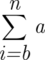
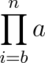

| POV-Ray for Unix version 3.8 | ||||
|
|
||||
| Home | POV-Ray for Unix | POV-Ray Tutorial | POV-Ray Reference | |
This section describes the POV-Ray scene description language. It is supposed to be used as a reference for looking up things. It does not contain detailed explanations on how scenes are written or how POV-Ray is used. It just explains all features, their syntax, applications, limits, drawbacks, etc.
The scene description language allows you to describe the world in a
readable and convenient way. Files are created in plain ASCII text using an
editor of your choice. The input file name is specified using the
Input_File_Name=file option or +Ifile
switch. By default the files have the extension .pov. POV-Ray
reads the file, processes it by creating an internal model of the scene and
then renders the scene.
The overall syntax of a scene is shown below. See Notation and Basic Assumptions for more information on syntax notation.
SCENE: SCENE_ITEM... SCENE_ITEM: LANGUAGE_DIRECTIVE | CAMERA | LIGHT | OBJECT | ATMOSPHERIC_EFFECT | GLOBAL_SETTINGS
In plain English, this means that a scene contains one or more scene items and that a scene item may be any of the five items listed below it. The items may appear in any order. None is a required item. In addition to the syntax depicted above, a LANGUAGE_DIRECTIVE may also appear anywhere embedded in other statements between any two tokens. There are some restrictions on nesting directives also.
For details on those five items see section Language Directives, section Objects, section Camera, section Atomospheric Effects and section Global Settings for details.
The POV-Ray language consists of identifiers, reserved keywords, floating point expressions, strings, special symbols and comments. The text of a POV-Ray scene file is free format. You may put statements on separate lines or on the same line as you desire. You may add blank lines, spaces or indentations as long as you do not split any keywords or identifiers.
See the following for more details:
Throughout the tutorial and reference sections, a consistent notation is used to mark keywords of the scene description language, command line switches, INI file keywords and file names.
For example:
Scene description language keywords and command-line switches:
sphere, 4.0 * sin(45.0)+W640 +H480Syntax, optional syntax, multiple syntax, and zero or more syntax items allowed respectively:
SYNTAX_ITEM[SYNTAX_ITEM]SYNTAX_ITEM...[SYNTAX_ITEM...]A float value or expression, and a vector value or expression:
Value_1<Value_1>Choices are represented by a vertical bar between syntax items:
ITEM1 | ITEM2 | ITEM3Certain lists and arrays also require square braces as part of the language rather than the language description:
[ ITEM ]New in version 3.8 these additional annotations appear throughout the documentation:
vX.y.z of the version number and it's short form vX.y currently v3.8.0 and
v3.8 respectivelyNote: POV-Ray is available as a command-line program on some platforms and as a GUI on others. Some of these platforms use folders to store files while others use directories. Some separate the folders and sub-folders with a slash character (/), back-slash character (\), or others. We have tried to make this documentation as generic as possible but sometimes we have to refer to folders, files, options etc., and rather than try to represent all possible combinations
we sometimes simplify the documentation by referring to a hypothetical 'standard installation' of POV-Ray upon a Microsoft Windows computer.
Here are some additional assumptions to be found in the documentation:
c:\Program Files\POV-Ray\vX.y and include/scene files in My Documents\POV-Ray\vX.y.
If we say 'include files are stored in the include directory', we mean the directory called 'include' located immediately within the folder which was used for documents, in the above case, it would be My Documents\POV-Ray\vX.y\include. We assume you can translate that to something like /usr/local/share/povray/vX.y/include for Linux or whatever is appropriate for your platform, operating system and personal installation.
POV-Ray has a number of reserved keywords which are listed below.
| a | ||
|---|---|---|
aa_levelaa_thresholdabsabsorptionaccuracyacosacoshadaptiveadc_bailout global settingadc_bailout radiosityagateagate_turbalbedo diffusealbedo phong |
albedo specularallall_intersectionsalphaaltitudealways_sampleambientambient_lightangleaoiapertureappendarc_anglearea_illumination |
area_lightarrayascasciiasinasinhassumed_gammaatanatan2atandatanhautostopaverage |
| b | ||
|---|---|---|
b_splinebackgroundbezier_splinebicubic_patchbitwise_andbitwise_orbitwise_xorblack_holeblend_gamma color mapblend_gamma pigment mapblend_mode color mapblend_mode pigment map |
blobblueblur_samplesbokehbounded_byboxboxedbozobreakbrickbrick_sizebrightness |
brilliancebump_mapbump_sizebumpsbt709 bump mapbt709 height fieldbt709 image mapbt709 image patternbt2020 bump mapbt2020 height fieldbt2020 image mapbt2020 image pattern |
| e | ||
|---|---|---|
eccentricityelseelseifemission finishemission media |
enderrorerror_boundevaluateexp |
expand_thresholdsexponentexteriorextinction |
| g | ||
|---|---|---|
gamma bump mapsgamma heightfieldgamma image mapgamma image patterngather |
gifglobalglobal_lightsglobal_settingsgradient |
granitegraygray_thresholdgreen |
| h | ||
|---|---|---|
height_fieldhexagon |
hf_gray_16hierarchy |
hypercomplexhollow |
| j | ||
|---|---|---|
jitterjpeg |
juliajulia_fractal |
|
| l | ||
|---|---|---|
lambdalathelemonleopardlight_grouplight_source |
linear_splinelinear_sweeplnload_filelocal directivelocal dictionary |
locationloglook_atlooks_likelow_error_factor |
| n | ||
|---|---|---|
natural_splinenearest_countnono_bump_scaleno_image |
no_radiosityno_reflectionno_shadownoise_generatornormal |
normal_indicesnormal_mapnormal_vectorsnownumber_of_waves |
| o | ||
|---|---|---|
objectoctavesoffoffsetomega |
omnimaxononceonionopen |
optionalorientorientationorthographicovus |
| q | ||
|---|---|---|
quadratic_splinequadricquartic |
quaternionquick_colorquick_colour |
quilted |
| r | ||
|---|---|---|
radialradiansradiosityradius spotlightradius ovusrainbowramp_waverandrangeratio |
readreciprocalrecursion_limitredreflectionreflection_exponentrefractionrenderrepeat crackle patternrepeat warp |
rgbrgbfrgbftrgbtrightripplesrotateroughness |
| s | ||
|---|---|---|
samples mediasamples subsurfacesave_filescalescallop_wavescatteringseedselectshadowlesssinsine_wavesinhsint8sint16besint16lesint32besint32lesizeskysky_sphereslice |
slopeslope_mapsmoothsmooth_trianglesolidsorspacingspecularspheresphere_sweepsphericalspiral1spiral2splinesplit_unionspotlightspottedsqrsqrtsquaresrgb bump maps |
srgb color literalssrgb heightfieldsrgb image mapssrgb image patternsrgbfsrgbtsrgbftstatisticsstrstrcmpstrengthstrlenstrlwrstruprsturmsubstrsubsurfacesumsuperellipsoidswitchsys |
| t | ||
|---|---|---|
ttantanhtargettautexttexturetexture_listtexture_maptgathicknessthreshold blob |
threshold isosurfacethreshold potential patterntifftightnesstile2tilestilingtolerancetoroidaltorustracetransform |
translatetranslucencytransmittriangletriangle_wavetriangulartruettfturb_depthturbulencetype |
| u | ||
|---|---|---|
uuint8uint16beuint16leu_stepsultra_wide_angleundef |
union csgunion torusupuse_alpha image patternuse_alpha finishuse_coloruse_colour |
use_indexuser_defined projectionuser_defined patternutf8uv_indicesuv_mappinguv_vectors |
| v | ||
|---|---|---|
vv_stepsvalvariancevaxis_rotate |
vcrossvdotversionvertex_vectorsvlength |
vnormalizevrotatevstrvturbulence |
| w | ||
|---|---|---|
warningwarpwater_level |
waveswhilewidth |
woodwrinkleswrite |
| x | ||
|---|---|---|
x |
||
| y | ||
|---|---|---|
y |
yes |
|
| z | ||
|---|---|---|
z |
||
POV-Ray allows you to define identifiers for later use in the scene file. An identifier must be at least one characters long. It may consist of upper and lower case letters, the digits 0 through 9 or an underscore character ("_"). The first character must be an alphabetic character. See also: Declaring Identifiers
Note: In previous versions identifier names were limited to 40 characters. There has been a Change removing that restriction.
All keywords (reserved words) are fully lower case. Therefore it is recommended that your identifiers contain at least one upper case character so it is sure to avoid conflict with reserved words.
Comments are text in the scene file included to make the scene file easier to read or understand. They are ignored by the ray-tracer and are there for your information. There are two types of comments in POV-Ray.
Two slashes are used for single line comments. Anything on a line after a
double slash (//) is ignored by the ray-tracer. For example:
// This line is ignored
You can have scene file information on the line in front of the comment as in:
object { FooBar } // this is an object
The other type of comment is used for multiple lines. It starts with
"/*" and ends with "*/".
Everything in-between is ignored. For example:
/* These lines are ignored by the ray-tracer */
This can be useful if you want to temporarily remove elements from a scene
file. /* ... */ comments can comment out
lines containing other // comments and thus can be used to
temporarily or permanently comment out parts of a scene. /* ...
*/ comments can be nested, the following is legal:
/* This is a comment // This too /* This also */ */
Use comments liberally and generously. Well used, they really improve the readability of scene files.
Many parts of the POV-Ray language require you to specify one or more floating point numbers. A floating point number is a number with a decimal point. Floats may be specified using literals, identifiers or functions which return float values. You may also create very complex float expressions from combinations of any of these using various familiar operators.
Where POV-Ray needs an integer value it allows you to specify a float value and it truncates it to an integer. When POV-Ray needs a logical or boolean value it interprets any non-zero float as true and zero as false. Because float comparisons are subject to rounding errors POV-Ray accepts values extremely close to zero as being false when doing boolean functions. Typically values whose absolute values are less than a preset value epsilon are considered false for logical expressions. The value of epsilon is system dependent but is generally about 1.0e-10. Two floats a and b are considered to be equal if abs(a-b) < epsilon.
The full syntax for float expressions is given below. Detailed explanations are given in the following sub-sections.
FLOAT:
NUMERIC_TERM [SIGN NUMERIC_TERM]...
SIGN:
+ | -
NUMERIC_TERM:
NUMERIC_FACTOR [MULT NUMERIC_FACTOR]...
MULT:
* | /
NUMERIC_FACTOR:
FLOAT_LITERAL |
FLOAT_IDENTIFIER |
SIGN NUMERIC_FACTOR |
FLOAT_FUNCTION |
FLOAT_BUILT_IN_IDENT |
( FULL_EXPRESSION ) |
! NUMERIC_FACTOR |
VECTOR DECIMAL_POINT DOT_ITEM |
FLOAT_FUNCTION_INVOCATION
FLOAT_LITERAL:
MANTISSA [EXP [SIGN] DIGIT...]
MANTISSA:
DIGIT... [DECIMAL_POINT [DIGIT...]] |
DECIMAL_POINT DIGIT...
DIGIT:
0 | 1 | 2 | 3 | 4 | 5 | 6 | 7 | 8 | 9
DECIMAL_POINT:
.
EXP:
e | E
DOT_ITEM:
x | y | z | t | u | v | red | green | blue | filter |
transmit | gray
FLOAT_FUNCTION:
abs( FLOAT ) | acos( FLOAT ) | acosh( FLOAT ) | asc( STRING ) |
asin( FLOAT ) | asinh( FLOAT ) | atan( FLOAT) | atanh( FLOAT) |
atan2( FLOAT , FLOAT ) | bitwise_and( FLOAT, FLOAT, ...) |
bitwise_or (FLOAT, FLOAT, ...) | bitwise_xor ( FLOAT, FLOAT, ...) |
ceil( FLOAT ) | cos( FLOAT ) | cosh( FLOAT ) | defined(IDENTIFIER ) |
degrees( FLOAT ) | dimensions( ARRAY_IDENTIFIER ) |
dimension_size( ARRAY_IDENTIFIER , FLOAT ) |
div( FLOAT , FLOAT ) | exp( FLOAT ) | file_exists( STRING ) |
floor( FLOAT ) | int( FLOAT ) | ln(Float | log( FLOAT ) |
max( FLOAT , FLOAT, ... ) | min( FLOAT , FLOAT, ... ) |
mod( FLOAT , FLOAT ) | pow( FLOAT , FLOAT ) |
radians( FLOAT ) | rand( FLOAT ) | seed( FLOAT ) |
select( FLOAT, FLOAT, FLOAT [,FLOAT]) | sin( FLOAT ) |
sinh( FLOAT ) | sqrt( FLOAT ) | strcmp( STRING , STRING ) |
strlen( STRING ) | tan( FLOAT ) | tanh( FLOAT ) |
val( STRING ) | vdot( VECTOR , VECTOR ) | vlength( VECTOR ) |
FLOAT_BUILT_IN_IDENT:
clock | clock_delta | clock_on | false | final_clock |
final_frame | frame_number | image_height | image_width |
initial_clock | initial_frame | no | now | off | on | pi | true |
version | yes
FULL_EXPRESSION:
FLOAT |
LOGICAL_EXPRESSION [? FULL_EXPRESSION : FULL_EXPRESSION]
LOGICAL_EXPRESSION:
REL_TERM [LOGICAL_OPERATOR REL_TERM]...
LOGICAL_OPERATOR:
& | | (note: this means an ampersand or a
vertical bar is a logical operator)
REL_TERM:
FLOAT [REL_OPERATOR FLOAT]... |
STRING REL_OPERATOR STRING
REL_OPERATOR:
< | <= | = | >= | > | !=
INT:
FLOAT (note: any syntax which requires a
integer INT will accept a FLOAT
and it will be truncated to an
integer internally by POV-Ray).
Note: FLOAT_IDENTIFIERS are identifiers previously declared to
have float values. The DOT_ITEM syntax is actually a vector or color operator but it returns a float value. See Vector Operators or Color Operators for details. An ARRAY_IDENTIFIER is just the identifier name of a previously declared array, it does not include the [] braces nor the index. The syntax for STRING is in the section Strings.
Float literals are represented by an optional sign ("+" or "-") digits, an optional decimal point and more digits. If the number is an integer you may omit the decimal point and trailing zero. If it is all fractional you may omit the leading zero. POV-Ray supports scientific notation for very large or very small numbers. The following are all valid float literals:
-2.0 -4 34 3.4e6 2e-5 .3 0.6
Float identifiers may be declared to make scene files more readable and to parameterize scenes so that changing a single declaration changes many values. An identifier is declared as follows.
FLOAT_DECLARATION: #declare IDENTIFIER = EXPRESSION; | #local IDENTIFIER = EXPRESSION;
Where IDENTIFIER is the name of the identifier up to 40 characters long and EXPRESSION is any valid expression which evaluates to a float value.
Note: There should be a semi-colon after the expression in a float declaration. If omitted, it generates a warning and some macros may not work properly. See #declare vs. #local for information on identifier scope.
Here are some examples.
#declare Count = 0; #declare Rows = 5.3; #declare Cols = 6.15; #declare Number = Rows*Cols; #declare Count = Count+1;
As the last example shows, you can re-declare a float identifier and may use previously declared values in that re-declaration. There are several built-in identifiers which POV-Ray declares for you. See Float Expressions: Built-in Variables for details.
Arithmetic expressions: Basic math expressions can be created from float literals, identifiers or functions using the following operators in this order of precedence...
( ) |
expressions in parentheses first |
+A -A !A |
unary minus, unary plus and logical not |
A*B A/B |
multiplication and division |
A+B A-B |
addition and subtraction |
Relational, logical and conditional expressions may also be created. However there is a restriction that these types of expressions must be enclosed in parentheses first. This restriction, which is not imposed by most computer languages, is necessary because POV-Ray allows mixing of float and vector expressions. Without the parentheses there is an ambiguity problem. Parentheses are not required for the unary logical not operator "!" as shown above. The operators and their precedence are shown here.
Relational expressions: The operands are arithmetic expressions and the result is always boolean with 1 for true and 0 for false. All relational operators have the same precedence.
(A < B) |
A is less than B |
(A <= B) |
A is less than or equal to B |
(A = B) |
A is equal to B (actually abs(A-B)<EPSILON) |
(A != B) |
A is not equal to B (actually abs(A-B)>=EPSILON) |
(A >= B) |
A is greater than or equal to B |
(A > B) |
A is greater than B |
Logical expressions: The operands are converted to boolean values of 0 for false and 1 for true. The result is always boolean. All logical operators have the same precedence.
Note: These are not bit-wise operations, they are logical.
(A & B) |
true only if both A and B are true, false otherwise |
(A | B) |
true if either A or B or both are true |
Conditional expressions: The operand C is boolean while operands A and B are any expressions. The result is of the same type as A and B.
(C ? A : B) |
if C then A else B |
Assuming the various identifiers have been declared, the following are examples of valid expressions...
1+2+3 2*5 1/3 Row*3 Col*5 (Offset-5)/2 This/That+Other*Thing ((This<That) & (Other>=Thing)?Foo:Bar)
Expressions are evaluated left to right with innermost parentheses evaluated first, then unary +, - or !, then multiply or divide, then add or subtract, then relational, then logical, then conditional.
POV-Ray defines a variety of built-in functions for manipulating floats, vectors and strings. Function calls consist of a keyword which specifies the name of the function followed by a parameter list enclosed in parentheses. Parameters are separated by commas. For example:
keyword(param1,param2)
The following are the functions which return float values. They take one
or more float, integer, vector, or string parameters. Assume that
A and B are any valid expression that evaluates to a
float; I is a float which is truncated to integer internally,
S, S1, S2 etc. are strings, and
V, V1, V2 etc. are any vector
expressions.O is an object identifier to a pre-declared object.
abs(A)
Absolute value of A. If A is negative, returns -A otherwise returns A.
acos(A)
Arc-cosine of A. Returns the angle, measured in radians, whose cosine is A.
acosh(A)
Inverse hyperbolic cosine of A.
asc(S)
Returns an integer value in the range 0 to 255 that is the ASCII value of the first character of the string S. For example asc("ABC") is 65 because that is the value of the character "A".
asin(A)
Arc-sine of A. Returns the angle, measured in radians, whose sine is A.
asinh(A)
Inverse hyperbolic sine of A
atan2(A,B)
Arc-tangent of (A/B). Returns the angle, measured in radians, whose tangent is (A/B). Returns appropriate value even if B is zero. Use atan2(A,1) to compute usual atan(A) function.
atanh(A)
Inverse hyperbolic tangent of A
bitwise_and(A,B,...)
Bitwise AND of two or more float values considered as integers.
bitwise_or(A,B,...)
Bitwise OR of two or more float values considered as integers.
bitwise_xor(A,B,...)
Bitwise XOR of two or more float values considered as integers.
Note: For the three bit-wise functions, each parameter is first converted to integer (so fractional part is ignored), and the computation is performed on a classical int. Do not expect to much precision, as conversion from a double precision number (usually with 52 bits mantissa) to an integer and back to a double precision number is not the best way to keep track of every bit.
ceil(A)
Ceiling of A. Returns the smallest integer greater than A. Rounds up to the next higher integer.
cos(A)
Cosine of A. Returns the cosine of the angle A, where A is measured in radians.
cosh(A)
The hyperbolic cosine of A.
defined(IDENTIFIER)
Returns true if the identifier is currently defined, false otherwise. This is especially useful for detecting end-of-file after a #read directive because the file identifier is automatically undefined when end-of-file is reached. See The #read Directive for details.
degrees(A)
Convert radians to degrees. Returns the angle measured in degrees whose value in radians is A. Formula is degrees=A/pi*180.0.
dimensions( ARRAY_IDENTIFIER )
Returns the number of dimensions of a previously declared array identifier. For example if you do #declare MyArray=array[6][10] then dimensions(MyArray) returns the value 2.
dimension_size( ARRAY_IDENTIFIER, FLOAT )
Returns the size of a given dimension of a previously declared array identifier. Dimensions are numbered left-to-right starting with 1. For example if you do #declare MyArray=array[6][10] then dimension_size(MyArray,2) returns the value 10.
div(A,B)
Integer division. The integer part of (A/B).
exp(A)
Exponential of A. Returns the value of e raised to the power A where e is the base of the natural logarithm, i.e. the non-repeating value approximately equal to 2.71828182846.
file_exists(S)
Attempts to open the file specified by the string S. The current directory and all library directories specified by the Library_Path or +L options are also searched. See Library Paths for details. Returns 1 if successful and 0 if unsuccessful.
floor(A)
Floor of A. Returns the largest integer less than A. Rounds down to the next lower integer.
inside(O,V)
It returns either 0.0, when the vector V is outside the object, specified by the object-identifier O, or 1.0 if it is inside.
Note: The inside keyword does not accept object-identifiers to non-solid objects.
int(A)
Integer part of A. Returns the truncated integer part of A. Rounds towards zero.
log(A)
Logarithm of A. Returns the logarithm base 10 of the value A.
ln(A)
Natural logarithm of A. Returns the natural logarithm base e of the value A.
max(A,B,...)
Maximum of two or more float values. Returns A if A larger than B. Otherwise returns B.
min(A,B,...)
Minimum of two or more float values. Returns A if A smaller than B. Otherwise returns B.
mod(A,B)
Value of A modulo B. Returns the remainder after the integer division of A/B. Formula is mod=((A/B)-int(A/B))*B.
pow(A,B)
Exponentiation. Returns the value of A raised to the power B.
Note: For a negative A and a non-integer B the function has no defined return value. The result then may depend on the platform POV-Ray is compiled on.
radians(A)
Convert degrees to radians. Returns the angle measured in radians whose value in degrees is A. Formula is radians=A*pi/180.0.
rand(I)
Returns the next pseudo-random number from the stream specified by the positive integer I. You must call seed() to initialize a random stream before calling rand(). The numbers are uniformly distributed, and have values between 0.0 and 1.0, inclusively. The numbers generated by separate streams are independent random variables.
seed(I)
Initializes a new pseudo-random stream with the initial seed value I. The number corresponding to this random stream is returned. Any number of pseudo-random streams may be used as shown in the example below:
#declare R1 = seed(0);
#declare R2 = seed(12345);
sphere { <rand(R1), rand(R1), rand(R1)>, rand(R2) }
Multiple random generators are very useful in situations where you use rand() to place a group of objects, and then decide to use rand() in another location earlier in the file to set some colors or place another group of objects. Without separate rand() streams, all of your objects would move when you added more calls to rand(). This is very annoying.
select(A, B, C [,D])
It can be used with three or four parameters Select compares the first argument with zero, depending on the outcome it will return B, C or D. A,B,C,D can be floats or funtions.
When used with three parameters, if A < 0 it will return B, else C (A >= 0).
When used with four parameters, if A < 0 it will return B. If A = 0 it will return C. Else it will return D (A > 0).
Example:
If A has the consecutive values -2, -1, 0, 1, and 2 :
// A = -2 -1 0 1 2
select (A, -1, 0, 1) //returns -1 -1 0 1 1
select (A, -1, 1) //returns -1 -1 1 1 1
sin(A)
Sine of A. Returns the sine of the angle A, where A is measured in radians.
sinh(A)
The hyperbolic sine of A.
strcmp(S1,S2)
Compare string S1 to S2. Returns a float value zero if the strings are equal, a positive number if S1 comes after S2 in the ASCII collating sequence, else a negative number.
strlen(S)
Length of S. Returns an integer value that is the number of characters in the string S.
sqrt(A)
Square root of A. Returns the value whose square is A.
tan(A)
Tangent of A. Returns the tangent of the angle A, where A is measured in radians.
tanh(A)
The hyperbolic tangent of A.
val(S)
Convert string S to float. Returns a float value that is represented by the text in string S. For example val("123.45") is 123.45 as a float.
vdot(V1,V2)
Dot product of V1 and V2. Returns a float value that is the dot product (sometimes called scalar product) of V1 with V2. It is directly proportional to the length of the two vectors and the cosine of the angle between them. Formula is vdot=V1.x*V2.x + V1.y*V2.y + V1.z*V2.z. See the animated demo scene VECT2.POV for an illustration.
vlength(V)
Length of V. Returns a float value that is the length of vector V. Formula is vlength=sqrt(vdot(A,A)). Can be used to compute the distance between two points. Dist=vlength(V2-V1).
See section Vector Functions and section String Functions for other functions which are somewhat float-related but which return vectors and strings. In addition to the above built-in functions, you may also define your own functions using the function keyword. See the section User-Defined Functions for more details.
Constants are:
FLOAT_BUILT_IN_IDENT: false | no | off | on | pi | tau | true | yes
The built-in constants never change value. They are defined as though the following lines were at the start of every scene.
#declare pi = 3.1415926535897932384626; #declare tau = 6.2831853071795864769253; #declare true = 1; #declare yes = 1; #declare on = 1; #declare false = 0; #declare no = 0; #declare off = 0;
The built-in float identifier pi is obviously useful in math
expressions involving circles. The built-in float identifiers
on, off, yes, no,
true, and false are designed for use as boolean
constants.
New in version 3.8 the tau
constant can be used as a more convenient and intuitive alternative to 2*pi
to express a full (360 degrees) turn in radians.
The built-in float constants on, off, yes, no, true, and false are most often used as boolean values with object modifiers or parameters such as sturm, hollow, hierarchy, smooth, media_attenuation, and media_interaction. Whenever you see syntax of the form keyword [Bool], if you simply specify the keyword without the optional boolean then it assumes keyword on. You need not use the boolean but for readability it is a good idea. You must use one of the false booleans or an expression which evaluates to zero to turn it off.
Note: Some of these keywords are on by default, if no keyword is specified.
For example:
object { MyBlob } // sturm defaults off, but
// hierarchy defaults on
object { MyBlob sturm } // turn sturm on
object { MyBlob sturm on } // turn sturm on
object { MyBlob sturm off } // turn sturm off
object { MyBlob hierarchy } // does nothing, hierarchy was
// already on
object { MyBlob hierarchy off } // turn hierarchy off
There are several built-in float variables. You can use them to specify values or to create expressions but you cannot re-declare them to change their values.
Clock-related are:
FLOAT_BUILT-IN_IDENT: clock | clock_delta | clock_on | final_clock | final_frame frame_number | initial_clock | initial_frame
These keywords allow to use the values of the clock which have been set in the command line switch options (or INI-file). They represent float or integer values, read from the animation options. You cannot re-declare these identifiers.
clock
The built-in float identifier clock is used to control
animations in POV-Ray. Unlike some animation packages, the action in POV-Ray
animated scenes does not depend upon the integer frame numbers. Rather you
should design your scenes based upon the float identifier
clock. For non-animated scenes its default value is 0 but you can set
it to any float value using the INI file option Clock=n.n
or the command-line switch +Kn.n to pass a single float
value your scene file.
Other INI options and switches may be used to animate scenes by automatically
looping through the rendering of frames using various values for clock.
By default, the clock value is 0 for the initial frame and 1 for the final frame. All other
frames are interpolated between these values.
For example if your object is supposed to rotate one full turn over the course
of the animation you could specify rotate 360*clock*y. Then as
clock runs from 0 to 1, the object rotates about the y-axis from 0 to 360 degrees.
Although the value of clock will change from frame-to-frame,
it will never change throughout the parsing of a scene.
clock_delta
The built-in float identifier clock_delta returns the amount
of time between clock values in animations in POV-Ray. While most animations
only need the clock value itself, some animation calculations are easier if
you know how long since the last frame. Caution must be used when designing
such scenes. If you render a scene with too few frames, the results may be
different than if you render with more frames in a given time period. On
non-animated scenes, clock_delta defaults to 0. See the section
Animation Options for more details.
clock_on
With this identifier the status of the clock can be checked: 1 is on, 0 is off.
#if(clock_on=0) //stuff for still image #else //some animation #end
frame_number
If you rather want to define the action in POV-Ray animated scenes depending upon the integer frame numbers, this identifier can be used. It reads the number of the frame currently being rendered.
#if(frame_number=1) //stuff for first image or frame #end #if(frame_number=2) //stuff for second image or frame #end #if(frame_number=n) //stuff for n th image or frame #end
initial_clock
This identifier reads the value set through the INI file option Initial_Clock=n.n
or the command-line switch +KIn.n.
final_clock
This identifier reads the value set through the INI file option Final_Clock=n.n
or the command-line switch +KFn.n.
initial_frame
This identifier reads the value set through the INI file option Initial_Frame=n
or the command-line switch +KFIn.
final_frame
This identifier reads the value set through the INI file option Final_Frame=n
or the command-line switch +KFFn.
Note: These values are the ones actually used. When the option 'cyclic animation' is set, they could be different from the ones originally set in the options.
Image-size are:
FLOAT_BUILT-IN_IDENT: image_width | image_height
image_width
This identifier reads the value set through the INI file option Width=n
or the command-line switch +Wn.
image_height
This identifier reads the value set through the INI file option Height=n
or the command-line switch +Hn.
You could use these keywords to set the camera ratio (up and right vectors) correctly. The viewing angle of the camera covers the full width of the rendered image. The camera ratio will always follow the ratio of the image width to height, regardless of the set image size. Use it like this:
up y*image_height right x*image_width
You could also make some items of the scene dependent on the image size:
#if (image_width < 300) crand 0.1 #else crand 0.5 #end
or:
image_map {
pattern image_width, image_width { //make pattern resolution
gradient x //dependent of render width
color_map { [ 0.0 ... ] [ 1.0 ... ] }
}
}
Miscellaneous are:
FLOAT_BUILT-IN_IDENT: now | version
The built-in float variable now returns a value specifying
the current date and time, given in days since 2000-01-01 00:00:00 GMT, at
a precision of seconds or better.
Among other things, this variable is primarily intended to be used in the following constructs:
#local CurrentTime = datetime(now); // current date and time as a string #local Random = seed(now*24*60*60); // get a different random sequence for each render
Note: The value of this variable changes over time as parsing progresses.
The built-in float variable version contains the current
setting of the version compatibility option. Although this value defaults to
the current POV-Ray version number, the initial value of
version may be set by the INI file option
Version=n.n or by the +MVn.n
command-line switch. This tells POV-Ray to parse the scene file using syntax
from an earlier version of POV-Ray.
The INI option or switch only affects the initial setting. Unlike other built-in identifiers, you may change the value of version throughout a scene file. You do not use #declare to change it though. The #version language directive is used to change modes. Such changes may occur several times within scene files.
Together with the built-in version identifier the #version directive allows you to save and restore the previous values of this compatibility setting. The new #local identifier option is especially useful here. For example suppose mystuff.inc is in version 3.5 format. At the top of the file you could put:
#local Temp_Vers = version; // Save previous value #version 3.5; // Change to 3.5 mode ... // Version 3.5 stuff goes here... #version Temp_Vers; // Restore previous version
Note: There should be a semi-colon after the
float expression in a #version directive. If omitted, it generates
a warning and some macros may not work properly.
Note: As of POV-Ray 3.7, the version compatibility option
defaults to 3.62 rather than the actual software version. However, in POV-Ray 3.7.0,
version defaults to the actual software version. This is a Change in
POV-Ray 3.8 so that version generally reflects the version compatibility option
even in the default case, except when used inside the very first #version
statement where it still defaults to the actual software version. Therefore, to identify
POV-Ray version 3.8 or higher, you will need to start your scene file with the following
construct:
#version version;
POV-Ray often requires you to specify a vector. A vector is a set of related float values. Vectors may be specified using literals, identifiers or functions which return vector values. You may also create very complex vector expressions from combinations of any of these using various familiar operators.
POV-Ray vectors may have from two to five components but the vast majority of vectors have three components. Unless specified otherwise, you should assume that the word vector means a three component vector. POV-Ray operates in a 3D x, y, z coordinate system and you will use three component vectors to specify x, y and z values. In some places POV-Ray needs only two coordinates. These are often specified by a 2D vector called an UV vector. Fractal objects use 4D vectors. Color expressions use 5D vectors but allow you to specify 3, 4 or 5 components and use default values for the unspecified components. Unless otherwise noted, all 2, 4 or 5 component vectors work just like 3D vectors but they have a different number of components.
The syntax for combining vector literals into vector expressions is almost identical to the rules for float expressions. In the syntax for vector expressions below, some of the syntax items are defined in the section for float expressions. See Float Expressions for those definitions. Detailed explanations of vector-specific issues are given in the following sub-sections.
VECTOR:
NUMERIC_TERM [SIGN NUMERIC_TERM]
NUMERIC_TERM:
NUMERIC_FACTOR [MULT NUMERIC_FACTOR]
NUMERIC_FACTOR:
VECTOR_LITERAL |
VECTOR_IDENTIFIER |
SIGN NUMERIC_FACTOR |
VECTOR_FUNCTION |
VECTOR_BUILT-IN_IDENT |
( FULL_EXPRESSION ) |
! NUMERIC_FACTOR |
FLOAT
VECTOR_LITERAL:
< FLOAT , FLOAT , FLOAT >
VECTOR_FUNCTION:
min_extent ( OBJECT_IDENTIFIER ) |
max_extent ( OBJECT_IDENTIFIER ) |
trace(OBJECT_IDENTIFIER, VECTOR, VECTOR, [VECTOR_IDENTIFIER] )|
vaxis_rotate( VECTOR , VECTOR , FLOAT ) |
vcross( VECTOR , VECTOR ) |
vrotate( VECTOR , VECTOR ) |
vnormalize( VECTOR ) |
vturbulence(FLOAT, FLOAT, FLOAT, VECTOR)
VECTOR_BUILT-IN_IDENT:
x | y | z | t | u | v
Note: VECTOR_IDENTIFIERS are identifiers previously declared to have vector values.
Vector literals consist of two to five float expressions that are
bracketed by angle brackets < and >. The
terms are separated by commas. For example here is a typical three component
vector:
< 1.0, 3.2, -5.4578 >
The commas between components are necessary to keep the program from
thinking that the 2nd term is the single float expression
3.2-5.4578 and that there is no 3rd term. If you see an error message
such as "Float expected but '>' found instead" then you
probably have missed a comma.
Sometimes POV-Ray requires you to specify floats and vectors side-by-side.
The rules for vector expressions allow for mixing of vectors with vectors or
vectors with floats so commas are required separators whenever an ambiguity
might arise. For example <1,2,3>-4 evaluates as a mixed
float and vector expression where 4 is subtracted from each component
resulting in <-3,-2,-1>. However the comma in
<1,2,3>,-4 means this is a vector followed by a float.
Each component may be a full float expression. For example
<This+3,That/3,5*Other_Thing>
is a valid vector.
Vector identifiers may be declared to make scene files more readable and to parameterize scenes so that changing a single declaration changes many values. An identifier is declared as follows.
VECTOR_DECLARATION: #declare IDENTIFIER = EXPRESSION; | #local IDENTIFIER = EXPRESSION;
Where IDENTIFIER is the name of the identifier up to 40 characters long and EXPRESSION is any valid expression which evaluates to a vector value.
Note: There should be a semi-colon after the expression in a vector declaration. If omitted, it generates a warning and some macros may not work properly. See #declare vs. #local for information on identifier scope.
Here are some examples....
#declare Here = <1,2,3>; #declare There = <3,4,5>; #declare Jump = <Foo*2,Bar-1,Bob/3>; #declare Route = There-Here; #declare Jump = Jump+<1,2,3>;
Note: You invoke a vector identifier by using its name without any angle brackets. As the last example shows, you can re-declare a vector identifier and may use previously declared values in that re-declaration. There are several built-in identifiers which POV-Ray declares for you. See section Built-in Vector Identifiers for details.
Vector literals, identifiers and functions may also be combined in
expressions the same as float values. Operations are performed on a
component-by-component basis. For example <1,2,3> +
<4,5,6> evaluates the same as <1+4,2+5,3+6>
or <5,7,9>. Other operations are done on a similar
component-by-component basis. For example (<1,2,3> =
<3,2,1>) evaluates to <0,1,0> because the
middle components are equal but the others are not. Admittedly this is not
very useful but it is consistent with other vector operations.
Conditional expressions such as (C ? A : B) require that
C is a float expression but A and B may be
vector expressions. The result is that the entire conditional evaluates as a
valid vector. For example if Foo and Bar are
floats then (Foo < Bar ? <1,2,3> : <5,6,7>)
evaluates as the vector <1,2,3> if Foo is
less than Bar and evaluates as <5,6,7>
otherwise.
You may use the dot operator to extract a single float component from a vector. Suppose the identifier Spot was previously defined as a vector. Then Spot.x is a float value that is the first component of this x, y, z vector. Similarly Spot.y and Spot.z reference the 2nd and 3rd components. If Spot was a two component UV vector you could use Spot.u and Spot.v to extract the first and second component. For a 4D vector use .x, .y, .z, and .t to extract each float component. The dot operator is also used in color expressions which are covered later.
You may use a lone float expression to define a vector whose components
are all the same. POV-Ray knows when it needs a vector of a particular type
and will promote a float into a vector if need be. For example the POV-Ray
scale statement requires a three component vector. If you
specify scale 5 then POV-Ray interprets this as scale
<5,5,5> which means you want to scale by 5 in every
direction.
Versions of POV-Ray prior to 3.0 only allowed such use of a float as a
vector in various limited places such as scale and
turbulence. However you may now use this trick anywhere. For
example...
box{0,1} // Same as box{<0,0,0>,<1,1,1>}
sphere{0,1} // Same as sphere{<0,0,0>,1}
When promoting a float into a vector of 2, 3, 4 or 5 components, all
components are set to the float value, however when promoting a vector of a
lower number of components into a higher order vector, all remaining
components are set to zero. For example if POV-Ray expects a 4D vector and
you specify 9 the result is <9,9,9,9> but if
you specify <7,6> the result is
<7,6,0,0>.
POV-Ray defines a variety of built-in functions for manipulating floats, vectors and strings. Function calls consist of a keyword which specifies the name of the function followed by a parameter list enclosed in parentheses. Parameters are separated by commas. For example:
keyword(param1,param2)
The following are the functions which return vector values. They take one
or more float, integer, vector, or string parameters. Assume that
A and B are any valid expression that evaluates to a
vector; and F is any float expression.
min_extent(OBJECT_IDENTIFIER), max_extent(OBJECT_IDENTIFIER).
The min_extent and max_extent return the
minimum and maximum coordinates of a declared object's bounding box (Corner1
and Corner2), in effect allowing you to find the dimensions and location of the object.
Note: This is not perfect, in some cases (such as CSG intersections and differences or isosurfaces) the bounding box does not represent the actual dimensions of the object.
Example:
#declare Sphere =
sphere {
<0,0,0>, 1
pigment { rgb <1,0,0> }
}
#declare Min = min_extent ( Sphere );
#declare Max = max_extent ( Sphere );
object { Sphere }
box {
Min, Max
pigment { rgbf <1,1,1,0.5> }
}
As of version 3.7 experimental support for reading the pixel resolution of an image map was added. This is done by giving an image map pigment identifier to max_extent(), which will then return the resolution of the image map as the x and y values of the returned vector.
One usage of this feature would be when using an image as a background matte.
Example:
#declare MatteImage =
pigment {
image_map {
jpeg "YourImage.jpg"
}
}
#declare Resolution = max_extent ( MatteImage );
#declare MatteNormalizationScale =
<min(1,Resolution.x/Resolution.y),
min(1,Resolution.y/Resolution.x),1>;
box { 0, <1,1,0.001>
pigment { MatteImage }
scale MatteNormalizationScale // Fit matte to unit square
scale MatteSceneScale // Size matte for scene
}
New in version 3.8 this functionality has been extended to support both normal maps and density files.
To fit a df3 with unequal x,y,z ranges inside unit cube without distortion, the set up for the scaling variable is as follows:
#declare Density0 = density { density_file df3 "A20x30x40.df3" interpolate 0 }
#declare Df3MapRange = max_extent(Density0);
#declare Df3NormalizationScale =
<min(1,Df3MapRange.x/max(Df3MapRange.y,Df3MapRange.z)),
min(1,Df3MapRange.y/max(Df3MapRange.x,Df3MapRange.z)),
min(1,Df3MapRange.z/max(Df3MapRange.x,Df3MapRange.y))>;
trace(OBJECT_IDENTIFIER, A, B, [VECTOR_IDENTIFIER]).
trace helps you finding the exact location of a ray intersecting
with an object's surface. It traces a ray beginning at the point A
in the direction specified by the vector B. If the ray
hits the specified object, this function returns the coordinate where the ray intersected
the object. If not, it returns <0,0,0>. If a fourth parameter in the
form of a vector identifier is provided, the normal of the object at the intersection
point (not including any normal perturbations due to textures) is stored into that vector.
If no intersection was found, the normal vector is reset to <0,0,0>.
Note: Checking the normal vector for
<0,0,0> is the only reliable way to determine whether an
intersection has actually occurred, intersections can and do occur anywhere,
including at <0,0,0>.
Example:
#declare MySphere = sphere { <0, 0, 0>, 1 }
#declare Norm = <0, 0, 0>;
#declare Start = <1, 1, 1>;
#declare Inter=
trace ( MySphere, Start, <0, 0, 0>-Start, Norm );
object {
MySphere
texture {
pigment { rgb 1}
}
}
#if (vlength(Norm)!=0)
cylinder {
Inter, Inter+Norm, .1
texture {
pigment {color red 1}
}
}
#end
vaxis_rotate(A,B,F) Rotate A about
B by F. Given the x,y,z coordinates of a point in space
designated by the vector A, rotate that point about an arbitrary
axis defined by the vector B. Rotate it through an angle
specified in degrees by the float value F. The result is a
vector containing the new x,y,z coordinates of the point.
vcross(A,B) Cross product of A and B.
Returns a vector that is the vector cross product of the two vectors. The
resulting vector is perpendicular to the two original vectors and its length
is equal to the area of the parallelogram defined by them. Or to put in an
other way, the cross product can also be formulated as:
AxB = |A| * |B| * sin(angle(A,B)) * perpendicular_unit_vector(A,B)
So the length of the resulting vector is proportional to the sine of the
angle between A and B. See the animated demo
scene VECT2.POV for an illustration.
vnormalize(A) Normalize vector A. Returns a unit
length vector that is the same direction as A. Formula is
vnormalize(A)=A/vlength(A).
Warning: Using vnormalize(<0,0,0>)
will result in an error.
vrotate(A,B) Rotate A about origin by
B. Given the x,y,z coordinates of a point in space designated by the
vector A, rotate that point about the origin by an amount
specified by the vector B. Rotate it about the x-axis by an
angle specified in degrees by the float value B.x. Similarly
B.y and B.z specify the amount to rotate in
degrees about the y-axis and z-axis. The result is a vector containing the
new x,y,z coordinates of the point.
vturbulence(Lambda, Omega, Octaves, A) Turbulence vector at A. Given the
x,y,z coordinates of a point in space designated by the vector A, return the
turbulence vector for that point based on the numbers given for Lambda,
Omega and Octaves. For the meaning of the parameters, check out the Lambda,
Omega and Octaves sections.
The amount of turbulence can be controlled by
multiplying the turbulence vector by a multiple. The frequency at which the
turbulence vector changes can be controlled by multiplying A with a
multiple. The turbulence vector returned by the function can be added to the
original point A to obtain a turbulated version of the point A. Example :
#declare MyVector = MyVector + Amount * vturbulence(2, 0.5, 6, MyVector * Frequency);
See section Float Functions for other functions which are somewhat vector-related but which return floats. In addition to the above built-in functions, you may also define your own functions using the #macro directive. See the section User Defined Macros for more details.
There are several built-in vector identifiers. You can use them to specify values or to create expressions but you cannot re-declare them to change their values. They are:
VECTOR_BUILT-IN_IDENT: x | y | z | t | u | v
All built-in vector identifiers never change value. They are defined as though the following lines were at the start of every scene.
#declare x = <1, 0, 0>; #declare y = <0, 1, 0>; #declare z = <0, 0, 1>; #declare t = <0, 0, 0, 1>; #declare u = <1, 0>; #declare v = <0, 1>;
The built-in vector identifiers x, y, and
z provide much greater readability for your scene files when used in
vector expressions. For example....
plane { y, 1} // The normal vector is obviously "y".
plane { <0,1,0>, 1} // This is harder to read.
translate 5*x // Move 5 units in the "x" direction.
translate <5,0,0> // This is less obvious.
An expression like 5*x evaluates to
5*<1,0,0> or <5,0,0>.
Similarly u and v may be used in 2D vectors. When
using 4D vectors you should use x, y,
z, and t and POV-Ray will promote x,
y, and z to 4D when used where 4D is required.
POV-Ray provides an easy method to access the individual components of different types of vector expressions, as illustrated in the following code examples:
#declare Vector = <1, 2>; #declare First_Component = Vector.u; #declare Second_Component = Vector.v; #declare Vector = <1, 2, 3>; #declare First_Component = Vector.x; #declare Second_Component = Vector.y; #declare Third_Component = Vector.z; #declare Vector = <1, 2, 3, 4>; #declare First_Component = Vector.x; #declare Second_Component = Vector.y; #declare Third_Component = Vector.z; #declare Fourth_Component = Vector.t;
See also: Dot Item Access for Colors.
COLOR:
COLOR_BODY |
color COLOR_BODY | (this means the keyword color or
colour COLOR_BODY colour may optionally precede any color specification)
COLOR_BODY:
COLOR_VECTOR |
COLOR_KEYWORD_GROUP |
COLOR_IDENTIFIER
COLOR_VECTOR:
rgb <3_Term_Vector> |
rgbf <4_Term_Vector> |
rgbt <4_Term_Vector> |
[ rgbft ] <5_Term_Vector> |
srgb <3_Term_Vector> |
srgbf <4_Term_Vector> |
srgbt <4_Term_Vector> |
srgbft <5_Term_Vector>
COLOR_KEYWORD_GROUP:
[ COLOR_KEYWORD_ITEM ]...
COLOR_KEYWORD_ITEM:
COLOR_IDENTIFIER |
red Red_Amount |
blue Blue_Amount |
green Green_Amount |
filter Filter_Amount |
transmit Transmit_Amount
Note: COLOR_IDENTIFIERS are identifiers previously declared to have color values. The 3, 4, and 5 term vectors are usually vector literals but may be vector expressions or floats promoted to vectors. See Operator Promotion and the sections below.
POV-Ray often requires you to specify a color. Colors consist of five
values or color components. The first three are called red,
green, and blue. They specify the intensity of the
primary colors red, green and blue using an additive color system like the
one used by the red, green and blue color phosphors on a color monitor.
The 4th component, called filter, specifies the amount of
filtered transparency of a substance. Some real-world examples of filtered
transparency are stained glass windows or tinted cellophane. The light
passing through such objects is tinted by the appropriate color as the
material selectively absorbs some frequencies of light while allowing others
to pass through. The color of the object is subtracted from the light passing
through so this is called subtractive transparency.
The 5th component, called transmit, specifies the amount of
non-filtered light that is transmitted through a surface. Some real-world
examples of non-filtered transparency are thin see-through cloth, fine mesh
netting and dust on a surface. In these examples, all frequencies of light
are allowed to pass through tiny holes in the surface. Although the amount of
light passing through is diminished, the color of the light passing through
is unchanged.
The color of the object and the color transmitted through the object
together contribute 100% of the final color. So if transmit is set to 0.9,
the transmitted color contributes 90% and the color of the object
contributes only 10%. This is also true outside of the 0-1 range, so for
example if transmit is set to 1.7, the transmitted color contributes with
170% and the color of the object contributes with minus 70%. Using transmit
values outside of the 0-1 range can be used to create interesting special
effects, but does not correspond to any phenomena seen in the real world.
An example:
camera {location -2.5*z look_at 0 orthographic}
box {
0,1
texture {
pigment {
gradient y
colour_map {
[0, red 1]
[1, blue 1]
}
}
finish{ambient 1}
}
texture {
pigment {
gradient x
colour_map {
[0, rgb 0.5 transmit -3]
[1, rgb 0.5 transmit 3]
}
}
finish{ambient 1}
}
translate <-0.5,-0.5,0>
scale <3,2,1>
}
When using the transmit value for special effects, you can visualize it this way:
The transmit value means contrast. 1.0 is no change in contrast, 0.5 is
half contrast, 2.0 is double contrast and so on. You could say that
transmit scales the colors. The color of the object is the center value.
All colors will get closer to the center value if transmit is between 0
and 1, and all colors will spread away from the center value if transmit
is greater than 1. If transmit is negative the colors will be inverted
around the center value. Rgb 0.5 is common to use as center value, but
other values can be used for other effects. The center value really is a
color, and non-gray colors can be used for interesting effects. The red,
green and blue components are handled separately.
Note: Earlier versions of POV-Ray used the
keyword alpha to
specify filtered transparency. However that word is often used to describe
non-filtered transparency. For this reason alpha is no longer
used.
Each of the five components of a color are float values which are normally in the range between 0.0 and 1.0. However any values, even negatives may be used.
Under most circumstances the keyword color is optional and may
be omitted. We also support the British or Canadian spelling
colour. Colors may be specified using vectors, keywords with floats or
identifiers. You may also create very complex color expressions from
combinations of any of these using various familiar operators. The syntax for
specifying a color has evolved since POV-Ray was first released. We have
maintained the original keyword-based syntax and added a short-cut vector
notation. Either the old or new syntax is acceptable however the vector
syntax is easier to use when creating color expressions.
The syntax for combining color literals into color expressions is almost identical to the rules for vector and float expressions. In the syntax for vector expressions, some of the syntax items are defined in the section for float expressions. See Float Expressions for those definitions. Detailed explanations of color-specific issues are given in the following sub-sections.
The syntax for a color vector is...
COLOR_VECTOR: rgb <3_Term_Vector> | rgbf <4_Term_Vector> | rgbt <4_Term_Vector> | [ rgbft ] <5_Term_Vector>
...where the vectors are any valid vector expressions of 3, 4 or 5 components. For example
color rgb <1.0, 0.5, 0.2>
This specifies a color whose red component is 1.0 or 100% of full intensity. The green component is 0.5 or 50% of full intensity and the blue component is 0.2 or 20% of full intensity. Although the filter and transmit components are not explicitly specified, they exist and are set to their default values of 0 or no transparency.
The rgbf keyword requires a four component vector. The 4th
component is the filter component and the transmit component defaults to
zero. Similarly the rgbt keyword requires four components where
the 4th value is moved to the 5th component which is transmit and then the
filter component is set to zero.
The rgbft keyword allows you to specify all five components.
Internally in expressions all five are always used.
Under some circumstances, if the vector expression is a 5 component
expression or there is a color identifier in the expression then the
rgbft keyword is optional.
While POV-Ray will normally expect colors to be expressed in whatever working gamma space you have set via assumed_gamma, as of version 3.7 the srgb, srgbf, srgbt and srgbft keywords have been added to specify colors encoded according to the sRGB standard (roughly corresponding to a display gamma pre-correction of 2.2). Using these keywords instead of rgb, rgbf, rgbt or rgbft, respectively, instructs POV-Ray to automatically convert the color components to the working gamma space, being approximately equivalent to:
Effective_Red_Amount = pow ( Red_Amount, 2.2/AssumedGamma ) Effective_Green_Amount = pow ( Green_Amount, 2.2/AssumedGamma ) Effective_Blue_Amount = pow ( Blue_Amount, 2.2/AssumedGamma ) Effective_Filter_Amount = Filter_Amount Effective_Transmit_Amount = Transmit_Amount
Note: Defining sRGB colors before assumed_gamma has been set will halt parsing and issue a warning.
The syntax is primarily intended for convenience when working with a physically accurate assumed_gamma of 1.0, as many people find this way of specifying colors more intuitive (for instance a value of about srgb 0.5 is commonly perceived as a medium grey, despite having an actual brightness of no more than 21.4%), and most image processing software and tools also use gamma pre-corrected colours in their user interface; while those may use slightly different color spaces, sRGB is a good approximation, and also has the advantage of being the official recommendation for the World Wide Web.
Note: Colors specified this way are not a different flavor of colors, but are rather converted on the fly to linear color values. When interpreting such values as a vector or accessing individual components, you will get the linear values rather than the pre-corrected values you originally specified.
For instance, the following color statements are all fully equivalent (except for rounding errors):
#declare Foo = color srgbt <51,76,102,127>/255;
#debug concat("<",vstr(5,Foo,",",0,3),">\n")
#declare Foo = color srgbt <0.2, 0.3, 0.4, 0.5>;
#debug concat("<",vstr(5,Foo,",",0,3),">\n")
#declare Foo = color srgb <0.2, 0.3, 0.4> transmit 0.5;
#debug concat("<",vstr(5,Foo,",",0,3),">\n")
#declare Foo = color rgbt <0.033,0.073,0.133,0.5>;
#debug concat("<",vstr(5,Foo,",",0,3),">\n")
Note: The srgb, srgbf, srgbt and srgbft keywords do not affect the way filter or transmit components are interpreted; these are always expected to be linear.
The older keyword method of specifying a color is still useful and many users prefer it.
COLOR_KEYWORD_GROUP: [ COLOR_KEYWORD_ITEM ]... COLOR_KEYWORD_ITEM: COLOR_IDENTIFIER | red Red_Amount | blue Blue_Amount | green Green_Amount | filter Filter_Amount | transmit Transmit_Amount
Although the color keyword at the beginning is optional, it
is more common to see it in this usage. This is followed by any of five
additional keywords red, green, blue,
filter, or transmit. Each of these component
keywords is followed by a float expression. For example
color red 1.0 green 0.5
This specifies a color whose red component is 1.0 or 100% of full intensity and the green component is 0.5 or 50% of full intensity. Although the blue, filter and transmit components are not explicitly specified, they exist and are set to their default values of 0. The component keywords may be given in any order and if any component is unspecified its value defaults to zero. A COLOR_IDENTIFIER can also be specified but it should always be first in the group. See Common Color Pitfalls for details.
Color identifiers may be declared to make scene files more readable and to parameterize scenes so that changing a single declaration changes many values. An identifier is declared as follows.
COLOR_DECLARATION: #declare IDENTIFIER = COLOR; | #local IDENTIFIER = COLOR;
Where IDENTIFIER is the name of the identifier up to 40 characters long and COLOR is any valid specification.
Note: There should be a semi-colon at the end of the declaration. If omitted, it generates a warning and some macros may not work properly. See #declare vs. #local for information on identifier scope.
Here are some examples....
#declare White = rgb <1,1,1>; #declare Cyan = color blue 1.0 green 1.0; #declare Weird = rgb <Foo*2,Bar-1,Bob/3>; #declare LightGray = White*0.8; #declare LightCyan = Cyan red 0.6;
As the LightGray example shows you do not need any color
keywords when creating color expressions based on previously declared colors.
The last example shows you may use a color identifier with the keyword style
syntax. Make sure that the identifier comes first before any other component
keywords.
Like floats and vectors, you may re-define colors throughout a scene but the need to do so is rare.
Color vectors may be combined in expressions the same as float or vector
values. Operations are performed on a component by component basis. For
example rgb <1.0,0.5,0.2>*0.9 evaluates the same as
rgb<1.0,0.5,0.2>*<0.9,0.9,0.9> or
rgb<0.9,0.45,0.18>. Other operations are done on a similar
component by component basis.
You may use the dot operator to extract a single component from a color.
Suppose the identifier Shade was previously defined as a color.
Then Shade.red is the float value of the red component of
Shade. Similarly Shade.green, Shade.blue,
Shade.filter and Shade.transmit extract the float
value of the other color components. shade.gray returns the gray value of the
color vector.
POV-Ray provides an easy method to access the individual components of different types of color expressions, as illustrated in the following code examples:
#declare Color = <1, 2, 3>; #declare First_Component = Color.red; #declare Second_Component = Color.green; #declare Third_Component = Color.blue; #declare Color = <1, 2, 3, 4, 5>; #declare First_Component = Color.red; #declare Second_Component = Color.green; #declare Third_Component = Color.blue; #declare Fourth_Component = Color.filter; #declare Fifth_Component = Color.transmit; #declare Color = <0.89, 0.47, 0.2>; #declare Gray_Value = Color.gray;
See also: Dot Item Access for Vectors.
The variety and complexity of color specification methods can lead to some common mistakes. Here are some things to consider when specifying a color.
When using filter transparency, the colors which come through are multiplied
by the primary color components. For example if gray light such as
rgb<0.9,0.9,0.9> passes through a filter such as
rgbf<1.0,0.5,0.0,1.0> the result is
rgb<0.9,0.45,0.0> with the red let through 100%, the green cut
in half from 0.9 to 0.45 and the blue totally blocked. Often users mistakenly
specify a clear object by
color filter 1.0
but this has implied red, green and blue values of zero. You have just specified a totally black filter so no light passes through. The correct way is either
color red 1.0 green 1.0 blue 1.0 filter 1.0
or
color transmit 1.0
In the 2nd example it does not matter what the rgb values are. All of the light passes through untouched. Another pitfall is the use of color identifiers and expressions with color keywords. For example...
color My_Color red 0.5
this substitutes whatever was the red component of My_Color
with a red component of 0.5 however...
color My_Color + red 0.5
adds 0.5 to the red component of My_Color and even less
obvious...
color My_Color * red 0.5
that cuts the red component in half as you would expect but it also
multiplies the green, blue, filter and transmit components by zero! The part
of the expression after the multiply operator evaluates to
rgbft<0.5,0,0,0,0> as a full 5 component color.
The following example results in no change to My_Color.
color red 0.5 My_Color
This is because the identifier fully overwrites the previous value. When using identifiers with color keywords, the identifier should be first. Another issue to consider: some POV-Ray syntax allows full color specifications but only uses the rgb part. In these cases it is legal to use a float where a color is needed. For example:
finish { ambient 1 }
The ambient keyword expects a color so the value 1 is
promoted to <1,1,1,1,1> which is no problem. However
pigment { color 0.4 }
is legal but it may or may not be what you intended. The 0.4
is promoted to <0.4,0.4,0.4,0.4,0.4> with the filter and
transmit set to 0.4 as well. It is more likely you wanted...
pigment { color rgb 0.4 }
in which case a 3 component vector is expected. Therefore the
0.4 is promoted to <0.4,0.4,0.4,0.0,0.0> with
default zero for filter and transmit. Finally there is another problem which
arises when using color dot operators in #declare or #local directives. Consider the directive:
#declare MyColor = rgb <0.75, 0.5, 0.75>; #declare RedAmt = MyColor.red;
Now RedAmt should be a float but unfortunately it is a color.
POV-Ray looks at the first keyword after the equals to try to guess what type
of identifier you want. It sees the color identifier MyColor
and assumes you want to declare a color. It then computes the float value as
0.75 then promotes that into
rgbft<0.75,0.75,0.75,0.75,0.75>. It would take a major rewrite
to fix this problem so we are just warning you about it. Any of the
following work-arounds will work properly.
#declare RedAmt = 0.0+MyColor.red; #declare RedAmt = 1.0*MyColor.red; #declare RedAmt = (MyColor.red);
Some objects allow you to specify functions that will be evaluated while rendering to determine the surface of these objects. In this respect functions are quite different to macros, which are evaluated at parse time but do not otherwise affect rendering. Additionally you may call these functions anywhere a Float Function is allowed, even during parsing. The syntax is identical to Float Expressions, however, only float functions that apply to float values may be used. Excluded are for example strlen or vlength. You find a full list of supported float functions in the syntax definition below.
FLOAT:
LOGIC_AND [OR LOGIC_AND]
OR:
|
LOGIC_AND:
REL_TERM [AND REL_TERM]
AND:
&REL_TERM:
TERM [REL_OPERATOR TERM]
REL_OPERATOR:
< | <= | >= | > | = | !=
TERM:
FACTOR [SIGN FACTOR]
SIGN:
+ | -
FACTOR:
MOD_EXPRESSION [MULT MOD_EXPRESSION]
MULT:
* | /
EXPRESSION:
FLOAT_LITERAL |
FLOAT_IDENTIFIER |
FLOAT_FUNCTION |
FLOAT_BUILT-IN_IDENT |
FUNCTION_IDENTIFIER |
( FLOAT ) |
IDENTIFIER |
SIGN EXPRESSION
FLOAT_FUNCTION:
abs( FLOAT ) | acos( FLOAT ) | acosh( FLOAT ) | asin( FLOAT ) |
asinh( FLOAT ) | atan( FLOAT) | atanh( FLOAT) |
atan2( FLOAT , FLOAT ) | ceil( FLOAT ) | cos( FLOAT ) |
cosh( FLOAT ) | degrees( FLOAT ) | exp( FLOAT ) |
floor( FLOAT ) | int( FLOAT ) | ln (Float) | log( FLOAT ) |
max( FLOAT , FLOAT, ... ) | min( FLOAT , FLOAT, ... ) |
mod( FLOAT , FLOAT ) | pow( FLOAT , FLOAT ) |
radians( FLOAT ) | sin( FLOAT ) | sinh( FLOAT ) |
sqrt( FLOAT ) | tan( FLOAT ) | tanh( FLOAT ) |
select( FLOAT , FLOAT , FLOAT [, FLOAT] )
FUNCTION_IDENTIFIER:
#local FUNCTION_IDENTIFIER = function { FLOAT } |
#declare FUNCTION_IDENTIFIER = function { FLOAT } |
#local FUNCTION_IDENTIFIER = function(IDENT_LIST) { FLOAT } |
#declare FUNCTION_IDENTIFIER = function(IDENT_LIST) { FLOAT } |
#local FUNCTION_IDENTIFIER = function{SPECIAL_FLOAT_FUNCTION} |
#local VECTOR_IDENTIFIER = function{SPECIAL_VECTOR_FUNCTION} |
#local COLOR_IDENTIFIER = function { SPECIAL_COLOR_FUNCTION } |
IDENT_LIST:
IDENT_ITEM [, IDENT_LIST]
IDENT_ITEM:
x | y | z | u | v | IDENTIFIER
(Note: x = u and y = v)
SPECIAL_FLOAT_FUNCTION:
pattern { PATTERN_BLOCK }
SPECIAL_VECTOR_FUNCTION:
TRANSFORMATION_BLOCK | SPLINE
SPECIAL_COLOR_FUNCTION:
PIGMENT
PATTERN_BLOCK:
PATTERN
Note: Only the above mentioned items can be used in user-defined functions. For example the rand() function is not available.
All of the above mentioned float functions are described in the section Float Functions.
|  |
sum(i, b, n, a)
|
|
The sum function. |
prod(i, b, n, a)
|
 |
|
The product function. |
For both prod and sum: i is any variable name and a is any expression, usually depending on i. b and n are also any expression.
Note: Even though the following example demonstrates just one usage, both the prod and sum functions require a wrapper before use.
#declare factorial = function(C) { prod(i, 1, C, i) }
#declare A = factorial(5);
The first parameter is the name of the iteration variable. The second is the initial value expression and the third is the final value expression. Those may not depend on the iteration variable but the iteration variable may still be used inside those two expressions (because it happens to already have been defined) but its value is undefined. The last expression is the actual expression which will be iterated through. It may use any variable in scope.
The scope of an iteration variable is the sequence operation function. That is, a iteration variable is only defined when used inside the sum/prod function. Of course sum/prod functions may be nested. However, there is one limit of a maximum of 56 local variable defined simultaneously, which essentially means that in any combination sum/prod functions cannot be nested deeper than 56 levels.
The iteration variable is incremented by one for each step, but its initial and final value may be any value. The iteration will be continued as long as the iteration value is less or equal to the final value.
Note: Because the iteration value is a floating-point variable, adding one will add a certain bias in a long iterations and thus the floating-point precision will be an issue in such a case and needs to be considered by allowing a reasonable error for the final value!
If the expression to be added has a negative sign it will of course in effect be substracted. Thus changing the sign will allow to generate negative values in the sum function. Equally multiplying by 1/expression effectively creates a division when used in the prod function.
Obviously to work in the first place the initial value of the result is the neutral element of the operation. That is, a sum calculation starts with 0 and a product calculation starts with 1 just like it is assumed in the sum and product functions in 'regular' math.
It should be noted that mathematically either sum or product are redundant because:
log10(prod(i, b, n, a)) = sum(i, b, n, log10(a))
which implies a sum can be represented as a product and vice versa, observing the usual mathematical constraints of logarithms, of course. However, as logarithms and their inverse (powers) are slow to compute both are provided...
You can use macros in functions, but the macros will be called only once when the function is defined, not every time the function is called. You cannot pass function variables to the macros.
You can pass functions to macros, how to do this is best explained by an example:
#macro Foo( Bar, X )
#declare Y = Bar(X);
#declare Z = Bar(Y);
#end
#declare FUNC=function(n){n+2}
Foo(FUNC, 1)
#debug str(Y,5,5)
#debug "\n"
#debug str(Z,5,5)
#debug "\n"
You declare a user defined function using the #declare or
#local directives. By default a function takes three parameters
and you do not have to explicitly specify the parameter names. The default three
parameters are x, y and z. For
example:
#declare foo = function { x + y * z }
If you need fewer or more parameters you have to explicitly specify the parameter list.
Note: The x and u as
well as y and v keywords are equivalent so you may not specify
both parameter names. You may not specify two or more parameters with the same
name either. Doing so may result in a parse error or undefined function results.
The following are valid functions with parameters:
#declare foo2 = function(x, y, z) { x + y * z }
#declare foo3 = function(k1, k2, z, y) { x + y * z + k1 * y + k2 }
#declare foo4 = function(h) { h * h + h }
#declare foo4 = function(u, v) { x + y * v } //=u + v*v
#declare foo4 = function(x, v, z) { u + y * v + z } //=x + v*v + z
Limits:
function blocks per scene is 1048575.Note: Redeclaring functions, directly, is not allowed. The way to do
this is to undef it first.
There is one special float function type. You may declare a
pattern function.
Note: The syntax is identical to that of patterns, however, you may not specify colors. Its result is always a float and not a color vector, as returned by a function containing a pigment.
#declare foo = function {
pattern {
checker
}
}
Note: The number of parameters of special function types is determined automatically, so you do not need to specify parameter names.
Right now you may only declare vector functions using one of the special
function types. Supported types are transform and
spline functions. For example:
#declare foo = function {
transform {
rotate <90, 0, 0>
scale 4
}
}
#declare myvector = foo(4, 3, 7);
#declare foo2 = function {
spline {
linear_spline
0.0, <0,0,0>
0.5, <1,0,0>
1.0, <0,0,0>
}
}
#declare myvector2 = foo2(0.7);
Function splines take the vector size into account. That is, a function containing a spline with five components will also return a five component vector (aka a color), a function containing a spline with two components will only return a two component vector and so on.
Note: The number of parameters of special function types is determined automatically, so you do not need to specify parameter names.
Right now you may only declare color functions using one of the special
function types. The only supported type is the pigment function.
You may use every valid pigment. This is a very simple example:
#declare foo = function {
pigment {
color red 1
}
}
#declare Vec = foo(1,2,3)
An example using a pattern:
#declare foo = function {
pigment {
crackle
color_map {
[0.3, color Red]
[1.0, color Blue]
}
}
}
#declare Val = foo(2,3,4).gray
Note: The number of parameters of special function types is determined automatically, so you do not need to specify parameter names.
Several functions are pre-defined. These internal functions can be accessed through
the functions.inc, so it should be included in your scene. The number of required parameters and what they control are also given in the include
file. See the functions.inc chapter in the Standard Include File section gives more information.
The POV-Ray language requires you to specify a string of characters to be used as a file name, text for messages or text for a text object. Strings may be specified using literals, identifiers or functions which return string values. See String Functions for details on string functions. Although you cannot build string expressions from symbolic operators such as are used with floats, vectors or colors, you may perform various string operations using string functions. Some applications of strings in POV-Ray allow for non-printing formatting characters such as newline or form-feed.
STRING: STRING_FUNCTION | STRING_IDENTIFIER | STRING_LITERAL STRING_LITERAL: "up to 256 ASCII characters" STRING_REL_TERM: STRING_LITERAL [STRING_REL_OPERATOR STRING_LITERAL]... STRING_REL_OPERATOR: < | <= | = | >= | > | != STRING_FUNCTION: str( FLOAT , INT , INT ) | concat( STRING , STRING , [STRING ,...]) | chr( INT ) | substr( STRING , INT , INT ) | strupr( STRING ) | strlwr( STRING ) | vstr( INT, VECTOR, STRING, INT, INT )
String literals begin with a double quote mark '"' which is followed by up to 256 characters and are terminated by another double quote mark. You can change the character set of strings using the global_settings charset option. The following are all valid string literals:
"Here" "There" "myfile.gif" "textures.inc"
Note: If you need to specify a quote mark in a string literal you must precede it with a backslash.
Example
"Joe said \"Hello\" as he walked in."
is converted to
Joe said "Hello" as he walked in.
If you need to specify a backslash, you will have to specify two. For example:
"This is a backslash \\ and this is two \\\\"
Is converted to:
This is a backslash \ and this is two \\
Windows users need to be especially wary about this as the backslash is also the windows path separator. For example, the following code does not produce the intended result:
#declare DisplayFont = "c:\windows\fonts\lucon.ttf"
text { ttf DisplayFont "Hello", 2,0 translate y*1.50 }
New users might expect this to create a text object using the font c:\windows\fonts\lucon.ttf. Instead, it will give an error message saying that it cannot find the font file c:windowsontslucon.ttf.
The correct form of the above code is as follows:
#declare DisplayFont = "c:\\windows\\fonts\\lucon.ttf"
text { ttf DisplayFont "Hello", 2,0 translate y*1.50 }
However, as POV-Ray for Windows also supports forward slashes as path separator,
it is recommended to use the following form:
#declare DisplayFont = "c:/windows/fonts/lucon.ttf"
text { ttf DisplayFont "Hello", 2,0 translate y*1.50 }
The escaping of backslashes occurs in all POV-Ray string literals. There are also
other formatting codes such as \n for new line.
See Text Formatting for details.
Note: Up to (and including) version 3.7.0, contrary to the documentation (and on all platforms) backslashes lost their special meaning where a file name is expected, except when preceding a double quote. For backward compatibility, this behaviour is still retained for scenes specifying a #version of 3.70 or lower, but a warning will be issued.
String identifiers may be declared to make scene files more readable and to parameterize scenes so that changing a single declaration changes many values. An identifier is declared as follows.
STRING_DECLARATION: #declare IDENTIFIER = STRING | #local IDENTIFIER = STRING
Where IDENTIFIER is the name of the identifier up to 40 characters long and STRING is any valid string specification.
Note: Unlike floats, vectors, or colors, there need not be a semi-colon at the end of the declaration. See #declare vs. #local for information on identifier scope.
Here are some examples...
#declare Font_Name = "ariel.ttf" #declare Inc_File = "myfile.inc" #declare Name = "John" #declare Name = concat(Name," Doe")
As the last example shows, you can re-declare a string identifier and may use previously declared values in that re-declaration.
POV-Ray supports the following string relational operators: < <= = >= > != and are subject to standard ASCII collating sequence rules.
Note: These relational operators are nothing more than a shortcut as they are an equivalent to calling the strcmp() function.
For example:
#if (string1 = string2)
#declare Color = pigment {rgb <0, 1, 0>};
#else
#declare Color = pigment {rgb <1, 0, 0>};
#end
Is the same as:
#if (strcmp(string1, string2) = 0)
#declare Color = pigment {rgb <0, 1, 0>};
#else
#declare Color = pigment {rgb <1, 0, 0>};
#end
This simple example shows just one usage:
// perspective (default) camera
camera {
location <0.0, 2.0, -5.0>
look_at <0.0, 0.0, 0.0>
right x*image_width/image_height
}
// create a regular point light source
light_source {
0*x // light's position (translated below)
color rgb <1,1,1> // light's color
translate <0, 20, -20>
}
background {rgb 1}
#declare TestCase = "ABC";
#if (TestCase < "ABD")
#declare Color = pigment {rgb <0, 1, 0>};
#else
#declare Color = pigment {rgb <1, 0, 0>};
#end
sphere {0,1 pigment {Color}}
POV-Ray defines a variety of built-in functions for manipulating floats, vectors and strings. Function calls consist of a keyword which specifies the name of the function followed by a parameter list enclosed in parentheses. Parameters are separated by commas. For example:
keyword(param1,param2)
The following are the functions which return string values. They take one
or more float, integer, vector, or string parameters. Assume that
A is any valid expression that evaluates to a float; B,
L, and P are floats which are truncated to integers
internally, S, S1, S2 etc are
strings.
chr(B) Character whose character value is
B. Returns a single character string. The character value of the
character is specified by an integer B which must be in the
range 0 to 65535 if you specified charset utf8 in the
global_settings and 0 to 127 if you specified charset
ascii. Refer to your platform specific documentation if you specified
charset sys. For example chr(70) is the string
"F". When rendering text objects you should be aware that the
characters rendered are dependent on the (TTF) font being used.
concat(S1,S2,...) concatenates strings S1 and
S2. Returns a string that is the concatenation of all parameter
strings. Must have at least 2 parameters but may have more. For example:
concat("Value is ", str(A,3,1), " inches")
If the float value A was 12.34321 the result is
"Value is 12.3 inches", which is a string.
datetime() Can be used to return the string representation of a date and time. It's syntax is:
datetime(FLOAT [,STRING])
where FLOAT is the time elapsed since 2000-01-01, 00:00:00 GMT in days. Note that this fits with the now keyword, so the following example will give you a string representation of the current date and time:
datetime(now)
The optional STRING parameter should conform to the same formatting as that of the strftime() C function.
The default for the STRING parameter format is %Y-%m-%d %H:%M:%SZ
str(A,L,P) Convert float A to a formatted string. Returns a
formatted string representation of float value A. The integer
parameter L specifies the minimum length of the string and the
type of left padding used if the string's representation is shorter than
the minimum. If L is positive then the padding is with blanks.
If L is negative then the padding is with zeros. The overall
minimum length of the formatted string is abs(L). If the string
needs to be longer, it will be made as long as necessary to represent the
value.
The integer parameter P specifies the number of digits after
the decimal point. If P is negative then a compiler-specific
default precision is use. Here are some examples:
str(123.456, 0, 3) "123.456" str(123.456, 4, 3) "123.456" str(123.456, 9, 3) " 123.456" str(123.456,-9, 3) "00123.456" str(123.456, 0, 2) "123.46" str(123.456, 0, 0) "123" str(123.456, 5, 0) " 123" str(123.000, 7, 2) " 123.00" str(123.456, 0,-1) "123.456000" (platform specific)
strlwr(S) Lower case of S. Returns a new string
in which all upper case letters in the string S1 are converted to lower case.
The original string is not affected. For example strlwr("Hello
There!") results in "hello there!".
substr(S,P,L) Sub-string from S. Returns a string
that is a subset of the characters in parameter S starting at
the position specified by the integer value P for a length
specified by the integer value L. For example
substr("ABCDEFGHI",4,2) evaluates to the string
"DE". If P+L-1>strlen(S) an error occurs.
strupr(S) Upper case of S. Returns a new string
in which all lower case letters in the string S are converted to
upper case. The original string is not affected. For example
strupr("Hello There!") results in "HELLO
THERE!".
vstr(N,A,S,L,P) Convert vector A to a formatted string. Returns a
formatted string representation of vector A where the elements of
the vector are separated by the string parameter S. The integer
parameter N specifies the amount of dimensions in vector A.
N is autoclipped to the range of 2 to 5, without warning. Specifying a
vector A with more dimensions than given by N will result
in an error.
The integer parameter L specifies the minimum length of the string and the
type of left padding used if the string's representation is shorter than
the minimum. The integer parameter P specifies the number of digits after
the decimal point. If P is negative then a compiler-specific
default precision is use. The function of L and P is the
same as in str. Here are some examples:
vstr(2, <1,2>, ", ", 0,1) "1.0, 2.0" vstr(5, <1,2,3,4,5>, ", ", 0,1) "1.0, 2.0, 3.0, 4.0, 5.0" vstr(1, 1, ", ", 0,1) "1.0, 1.0" vstr(2, 1, ", ", 0,1) "1.0, 1.0" vstr(5, 1, ", ", 0,1) "1.0, 1.0, 1.0, 1.0, 1.0" vstr(7, 1, ", ", 0,1) "1.0, 1.0, 1.0, 1.0, 1.0" vstr(3, <1,2>, ", ", 0,1) "1.0, 2.0, 0.0" vstr(5, <1,2,3>, ", ", 0,1) "1.0, 2.0, 3.0, 0.0, 0.0" vstr(3, <1,2,3,4>, ", ", 0,1) error
See section Float Functions for other functions which are
somewhat string-related but which return floats. In addition to the above
built-in functions, you may also define your own functions using the
#macro directive. See the section
User Defined Macros for more details.
At the moment there is only one built-in string variable. You can use it to specify values or to create expressions but you cannot re-declare it to change it's value.
File-related are:
STRING_BUILT-IN_IDENT: input_file_name
input_file_name
The name of the scene input file.
You may declare arrays of identifiers with up to five dimensions. Any item that can be declared as an identifier can be declared in an array. Consequential to the improvements with the classic array container topology, a New feature in version 3.8 extended functionality to allow the creation of dictionary container types. Dictionaries can be used for mapping string keys to arbitrary-type values.
The syntax is as follows:
ARRAY_DECLARATION:
#declare IDENTIFIER = array[ INT ][[ INT ]]..[ARRAY_INITIALIZER] |
#local IDENTIFIER = array[ INT ][[ INT ]]..[ARRAY_INITIALIZER]
ARRAY_INITIALIZER:
{ARRAY_ITEM, [ARRAY_ITEM, ]... }
ARRAY_ITEM:
RVALUE | ARRAY_INITIALIZER
DICTIONARY_DECLARATION:
#declare IDENTIFIER = dictionary; | #local IDENTIFIER = dictionary;
#declare IDENTIFIER = dictionary DICTIONARY_INITIALIZER |
#local IDENTIFIER = dictionary DICTIONARY_INITIALIZER
DICTIONARY_INITIALIZER:
{DICTIONARY_ITEM, [DICTIONARY_ITEM, ]... }
DICTIONARY_ITEM:
["STRING"]: DICTIONARY_ENTRY | .STRING_IDENTIFIER: DICTIONARY_ENTRY
DICTIONARY_ENTRY:
Any valid array entry
Where IDENTIFIER is the name of the identifier and INT is a valid float expression, internally truncated to an integer, and used to specify the size of the array.
Note: In previous versions IDENTIFIER names were limited to 40 characters. There has been a Change removing that restriction.
See Array Initializers for more about the optional ARRAY_INITIALIZER parameter.
Consider the following example of a one-dimensional, uninitialized array:
#declare MyArray = array[10]
It declares an uninitialized array of ten elements. The elements are referenced as MyArray[0] through MyArray[9]. As yet, the type of the elements are undetermined. Once you have initialized any element of the array, all other elements can only be defined as that type. Any attempt to reference an uninitialized element results in an error. More below:
#declare MyArray = array[10]
#declare MyArray[5] = pigment{White} //all other elements must
//be pigments too.
#declare MyArray[2] = normal{bumps 0.2} //generates an error
#declare Thing = MyArray[4] //error: uninitialized array element
Multi-dimensional arrays up to five dimensions may be declared. This example ...
#declare MyGrid = array[4][5]
... declares a 20 element array of 4 rows and 5 columns. Elements are referenced from MyGrid[0][0] to MyGrid[3][4]. Although it is permissible to reference an entire array as a whole, you may not reference just one dimension of a multi-dimensional array.
#declare MyArray = array[10] #declare MyGrid = array[4][5] #declare YourArray = MyArray //this is ok #declare YourGrid = MyGrid //so is this #declare OneRow = MyGrid[2] //this is illegal
The #ifdef and #ifndef directives can be used to check whether a specific element of an array has been declared. See also: dimensions and dimension_size for additional information about the methods used to determine the size of arrays.
Large uninitialized arrays do not take much memory. Internally they are arrays of pointers so they probably use just 8 bytes per element. Once initialized with values, they consume memory depending on what they contain.
The rules for local vs global arrays are the same as any other identifier.
Note: This applies to the entire array. You cannot mix local and global elements in the same array. See #declare vs. #local for information on identifier scope.
Any legitimate use of the #declare directive can also be put into an array. In other words, you can also create multidimensional arrays by making an array of arrays.
New to version 3.8 points to also consider:
#ifdef(ARRAY[INDEX]).dictionary containers only:local and global they represent the most local and the least local or global identifiers respectively.Additional usage examples are as follows:
// create an empty dictionary
#declare Fnord = dictionary;
// create a dictionary with elements
#declare Fnord = dictionary {
["Foo"]: 42,
["Bar"]: sphere { <0,0,0>, 1 }
}
// alternative
#declare Fnord = dictionary {
.Foo: 42,
.Bar: sphere { <0,0,0>, 1 }
}
// access a dictionary element
#declare Fnord["Foo"] = 42;
#declare Answer = Fnord["Foo"];
// alternative
#declare Fnord.Foo = 42;
#declare Answer = Fnord.Foo;
// test whether a dictionary contains a particular key
#ifdef (Fnord["Foo"]) ... #end
#declare FooKeyExists = defined(Fnord.Foo);
// remove a key from a dictionary
#undef Fnord["Foo"];
// declare a local and un-define any global variable of same name
#declare local.Foo = 4711;
#undef global.Foo;
Because it can be cumbersome to individually initialize the elements of an array, you may initialize it as it is created using array initializer syntax.
#include "colors.inc"
#declare FlagColors = array[3] {Red,White,Blue}
Multi-dimensional arrays may also be initialized this way.
#declare Digits =
array[4][10] {
{7,6,7,0,2,1,6,5,5,0},
{1,2,3,4,5,6,7,8,9,0},
{0,9,8,7,6,5,4,3,2,1},
{1,1,2,2,3,3,4,4,5,5}
}
The commas are required between elements and between dimensions as shown in the example.
Splines give you a way to define 'pathways' through your scenes. You specify a series of points, and POV-Ray interpolates to make a curve connecting them. Every point along the spline has a numerical value. A good example of a spline is the path of a moving object: the spline itself would be the path traced out by the object and the 'parameter' would be time; as time changes the object's position moves along the spline. Therefore, given a time reference you could use this spline to find the position of the object. In fact, splines are very well suited to animation.
The syntax is:
SPLINE_DECLARATION:
#declare IDENTIFIER =
spline {
[SPLINE_IDENTIFIER] |
[SPLINE_TYPE] |
[Val_1, <Point_1>[,]
Val_2, <Point_2>[,]
...
Val_n, <Point_n>]
}
SPLINE_TYPE:
linear_spline | quadratic_spline | cubic_spline | natural_spline
SPLINE_USAGE:
MySpline(Val) | MySpline(Val, SPLINE_TYPE)
The first item gives the type of interpolation. In a linear_spline, straight lines connect each point. In a quadratic_spline, a smooth curve defined by a second-order polynomial connects each point, whereas with cubic_spline and natural_spline, a smooth curve defined by a third-order polynomial connects each point. The default is linear_spline.
Following this are a number of float values each followed by a position vector, all
separated by commas. Val_1, Val_2, etc, are the value
of the spline parameter at each specific point. The points need not be in order of their
parameter values. If two points have the same parameter value, the second point will replace the first.
Beyond the range of the lowest and highest parameter values, the
spline position is fixed at the endpoints.
Note: Because of the way cubic splines
are defined, the first and last points are tangents rather than points on
the spline, cubic_spline interpolation is only valid between the second and
next-to-last points. For all other spline types, interpolation is valid from
the first point to the last point. For t-values outside the valid range,
POV-Ray returns the value of the nearest valid point.
To use a spline, you place the spline identifier followed by the parameter (in parentheses) wherever you would normally put a vector, similar to a macro. Splines behave mostly like three-dimensional vectors.
Here is an example:
camera { location <0,2,-2> look_at 0 }
light_source { <-5,30,-10> 1 }
#declare MySpline =
spline {
cubic_spline
-.25, <0,0,-1>
0.00, <1,0,0>
0.25, <0,0,1>
0.50, <-1,0,0>
0.75, <0,0,-1>
1.00, <1,0,0>
1.25, <0,0,1>
}
#declare ctr = 0;
#while (ctr < 1)
sphere {
MySpline(ctr),.25
pigment { rgb <1-ctr,ctr,0> }
}
#declare ctr = ctr + 0.01;
#end
You can also have POV-Ray evaluate a spline as if it were a different type of spline by specifying the type of spline after the value to interpolate at, for example:
sphere{ <2,0,2>, .25 pigment{rgb MySpline(clock, linear_spline)}}
Splines are 'intelligent' when it comes to returning vectors. The vector with the most components in the spline determines the size of the returned vector. This allows vectors from two to five components to be returned by splines.
Also, function splines take the vector size into account. That is, a function containing a spline with five components will also return a five component vector (aka a color), a function containing a spline with two components will only return a two component vector and so on.
You can pass functions to macros, how to do this is best explained by an example
#macro Foo( Bar, Val )
#declare Y = Bar(Val).y;
#end
#declare myspline =
spline {
1, <4,5>
3, <5,5>
5, <6,5>
}
Foo(myspline, 2)
#debug str(Y,5,5)
#debug "\n"
The supported transformations are rotate, scale, and translate. They are used to turn, size and move an object or texture. A transformation matrix may also be used to specify complex transformations directly. Groups of transformations may be merged together and stored in a transformation identifier.
The syntax for transformations is as follows:
TRANSFORMATION:
rotate <Rotate_Amt> | scale <Scale_Amt> |
translate <Translate_Amt> | transform TRANSFORM_IDENTIFIER |
transform { TRANSFORMATION_BLOCK...} |
matrix <Val00, Val01, Val02,
Val10, Val11, Val12,
Val20, Val21, Val22,
Val30, Val31, Val32>
TRANSFORMATION_BLOCK:
TRANSFORM_IDENTIFIER | TRANSFORMATION | inverse
TRANSFORM_DECLARATION:
#declare IDENTIFIER = transform { TRANSFORMATION_BLOCK...} |
#local IDENTIFIER = transform { TRANSFORMATION_BLOCK...}
Items may be moved by adding a translate modifier. It consists of the keyword translate followed by a vector expression. The three terms of the vector specify the number of units to move in each of the x, y and z directions. Translate moves the element relative to its current position.
For example:
sphere { <10, 10, 10>, 1
pigment { Green }
translate <-5, 2, 1>
}
will move the sphere from the location <10,10,10> to <5,12,11>. It does not move it to the absolute location <-5,2,1>. Translations are always relative to the item's location before the move. Translating by zero will leave the element unchanged on that axis.
For example:
sphere { <10, 10, 10>, 1
pigment { Green }
translate 3*x // evaluates to <3,0,0> so move 3 units
// in the x direction and none along y or z
}
You may change the size of an object or texture pattern by adding a scale modifier. It consists of the keyword scale followed by a vector expression. The three terms of the vector specify the amount of scaling in each of the x, y and z directions.
Uneven scaling is used to stretch or squish an element. Values larger than one stretch the element on that axis while values smaller than one are used to squish it. Scale is relative to the current element size. If the element has been previously re-sized using scale then scale will size relative to the new size. Multiple scale values may used.
For example:
sphere { <0,0,0>, 1
scale <2,1,0.5>
}
will stretch and smash the sphere into an ellipsoid shape that is twice the original size along the x-direction, remains the same size in the y-direction and is half the original size in the z-direction.
If a lone float expression is specified it is promoted to a three component vector whose terms are all the same. Thus the item is uniformly scaled by the same amount in all directions.
For example:
object {
MyObject
scale 5 // Evaluates as <5,5,5> so uniformly scale
// by 5 in every direction.
}
When one of the scaling components is zero, POV-Ray changes this component to 1 since it assumes that 0 means no scaling in this direction. A warning "Illegal Value: Scale X, Y or Z by 0.0. Changed to 1.0." is issued.
You may change the orientation of an object or texture pattern by adding a rotate modifier. It consists of the keyword rotate followed by a vector expression. The three terms of the vector specify the number of degrees to rotate about each of the x-, y- and z-axes.
Note: The order of the rotations does matter. Rotations occur about the x-axis first, then the y-axis, then the z-axis. If you are not sure if this is what you want then you should only rotate on one axis at a time using multiple rotation statements to get a correct rotation.
rotate <0, 30, 0> // 30 degrees around Y axis then, rotate <-20, 0, 0> // -20 degrees around X axis then, rotate <0, 0, 10> // 10 degrees around Z axis.
Rotation is always performed relative to the axis. Thus if an object is some distance from the axis of rotation it will not only rotate but it will orbit about the axis as though it was swinging around on an invisible string.
POV-Ray uses a left-handed rotation system. Using the famous Computer Graphics Aerobics exercise, you hold up your left hand and point your thumb in the positive direction of the axis of rotation. Your fingers will curl in the positive direction of rotation. Similarly if you point your thumb in the negative direction of the axis your fingers will curl in the negative direction of rotation. See Understanding POV-Ray's Coordinate System for an illustration.
The matrix keyword can be used to explicitly specify the transformation matrix to be used for objects or textures.
Its syntax is:
MATRIX:
matrix <Val00, Val01, Val02,
Val10, Val11, Val12,
Val20, Val21, Val22,
Val30, Val31, Val32>
Where Val00 through Val32 are float expressions enclosed in angle brackets and separated by commas.
Note: This is not a vector. It is a set of 12 float expressions.
These floats specify the elements of a 4 by 4 matrix with the fourth column implicitly set to <0,0,0,1>. At any given point P, P=<px, py, pz>, is transformed into the point Q, Q=<qx, qy, qz>
by
qx = Val00 * px + Val10 * py + Val20 * pz + Val30
qy = Val01 * px + Val11 * py + Val21 * pz + Val31
qz = Val02 * px + Val12 * py + Val22 * pz + Val32
Normally you will not use the matrix keyword because it is less descriptive than the transformation commands and harder to visualize. However the matrix command allows more general transformation effects like shearing. The following matrix causes an object to be sheared along the y-axis.
object {
MyObject
matrix < 1, 1, 0,
0, 1, 0,
0, 0, 1,
0, 0, 0 >
}
The POV Scene Language contains several statements called language directives which tell the file parser how to do its job. These directives can appear in almost any place in the scene file - even in the middle of some other statements. They are used to include other text files in the stream of commands, to declare identifiers, to define macros, conditional, or looped parsing and to control other important aspects of scene file processing.
Each directive begins with the hash character # (often called a number sign or pound sign). It is followed by a keyword and optionally other parameters.
In versions of POV-Ray prior to 3.0, the use of this # character was optional. Language directives could only be used between objects, camera or light_source statements and could not appear within those statements. The
exception was the #include which could appear anywhere. Now that all language directives can be used almost anywhere, the # character is mandatory. The following keywords introduce language directives.
Earlier versions of POV-Ray considered the keyword #max_intersections and the keyword #max_trace_level to be language directives but they have been moved to the global_settings statement and should be placed there without the # sign. Their use as a directive still works but it generates a warning and may be discontinued in the future.
The language allows include files to be specified by placing the line
#include "filename.inc"
at any point in the input file. The filename may be specified by any valid string expression but it usually is a literal string enclosed in double quotes. It may be up to 40 characters long (or your computer's limit), including the two double-quote characters.
The include file is read in as if it were inserted at that point in the file. Using include is almost the same as cutting and pasting the entire contents of this file into your scene.
Include files may be nested. You may have at most 10 nested include files. There is no limit on un-nested include files.
Generally, include files have data for scenes but are not scenes in themselves. By convention scene files end in .pov and include files end with .inc.
It is legal to specify drive and directory information in the file specification however it is discouraged because it makes scene files less portable between various platforms. Use of full lower case is also recommended but not required.
Note: If you ever intend to distribute any source files you make for POV-Ray, remember that some operating systems have case-sensitive file names).
It is typical to put standard include files in a special sub-directory. POV-Ray can only read files in the current directory or one referenced by the Library_Path option or +L switch. See the section
Library Paths.
You may use the #local directive to declare identifiers which are temporary in duration and local to the include file in scope. For details see #declare vs. #local.
Identifiers may be declared and later referenced to make scene files more readable and to parameterize scenes so that changing a single declaration changes many values. There are several built-in identifiers which POV-Ray declares for you. See the sections: Built-in Variables and Built-in Vector Identifiers for details.
An identifier is declared as follows.
DECLARATION: #declare [deprecated] IDENTIFIER = RVALUE | #local [deprecated] IDENTIFIER = RVALUE RVALUE: FLOAT; | VECTOR; | COLOR; | STRING | OBJECT | TEXTURE | PIGMENT | NORMAL | FINISH | INTERIOR | MEDIA | DENSITY | COLOR_MAP | PIGMENT_MAP | SLOPE_MAP | NORMAL_MAP | DENSITY_MAP | CAMERA | LIGHT_SOURCE | FOG | RAINBOW | SKY_SPHERE | TRANSFORM
Note: See the section on Deprecation Support for more information
Where IDENTIFIER is the name of the identifier that is at least one character long and RVALUE is any of the listed items.
The syntax for each is in the corresponding section of this language reference.
Note: In previous versions identifier names were limited to 40 characters. There has been a Change removing that restriction.
Here are some examples.
#declare Rows = 5;
#declare Count = Count+1;
#local Here = <1,2,3>;
#declare White = rgb <1,1,1>;
#declare Cyan = color blue 1.0 green 1.0;
#declare Font_Name = "ariel.ttf"
#declare Rod = cylinder {-5*x,5*x,1}
#declare Ring = torus {5,1}
#local Checks = pigment { checker White, Cyan }
object { Rod scale y*5 } // not "cylinder { Rod }"
object {
Ring
pigment { Checks scale 0.5 }
transform Skew
}
Note: There should be a semi-colon after the expression in all float,vector and color identifier declarations. This semi-colon is introduced in POV-Ray version 3.1. If omitted, it generates a warning and some macros may not work properly. Semicolons after other declarations are optional.
Declarations, like most language directives, can appear almost anywhere in the file, even within other statements. For example:
#declare Here=<1,2,3>;
#declare Count=0; // initialize Count
union {
object { Rod translate Here*Count }
#declare Count=Count+1; // re-declare inside union
object { Rod translate Here*Count }
#declare Count=Count+1; // re-declare inside union
object { Rod translate Here*Count }
}
As this example shows, you can re-declare an identifier and may use previously declared values in that re-declaration.
Note: Object identifiers use the generic wrapper statement object{ ... }. You do not need to know what kind of object it is.
Declarations may be nested inside each other within limits. In the example in the previous section you could declare the entire union as a object. However for technical reasons there are instances where you may not use any language directive inside the declaration of floats, vectors or color expressions. Although these limits have been loosened somewhat since POV-Ray 3.1, they still exist.
Identifiers declared within #macro ...
#end blocks are not created at the time the macro is defined. They are only created at the time the macro is actually invoked. Like all other items inside such a #macro definition, they are ignored when the macro is defined.
To help simplify passing multiple values out of a macro New tuple-style syntax extensions have been added to the #declare and #local directives:
#declare ( ID1, ID2, ...) = ( EXPR1, EXPR2, ... ); //This statement is fully equivalent to: #declare ID1 = EXPR1; #declare ID1 = EXPR2;
Note: This equivalence holds true even for constructs like #declare (A,B) = (B,A); which does not swap the contents of A and B as you might expect. The terminating semicolon is optional.
In addition, a similar syntax extension has been added for easier assignment of vector components to individual variables:
// Is this valid? ie: < and > if so just remove this line #declare < ID1, ID2, ... > = VECTOR_EXPR; //This statement is fully equivalent to: #local TEMP = VECTOR_EXPR; #declare ID1 = TEMP.x; #declare IDY = TEMP.y;
Note: The new syntax does not actually define the local variable TEMP. The terminating semicolon is mandatory.
The #local statement syntax has also been extended accordingly. The deprecated keyword can be used with these new syntax variants by placing it right before the respective identifier:
#declare (A, deprecated B) = (47, 11);
Extended #declare and #local tuple syntax to also support assignment from arrays, and to support assignment to mismatching number of identifiers. Using ...
#declare { IDENTIFIER_LIST } = ARRAY_EXPRESSION
... will assign the first elements of the array expression (either an array identifier or an array declaration with initializer) to the given identifiers. The IDENTIFIER_LIST may now contain empty elements, in which case the corresponding element from the right-hand side will be skipped accordingly.
Extended tuple assignment syntax to allow for omission of right-hand side elements; extend array initializer syntax to allow for omission of elements.
Left-hand side elements in tuple assignments can now be prepended with the optional keyword. If an element is flagged this way, or left empty, the corresponding right-hand side element may be an uninitialized identifier or left empty. In this case, the respective left-hand side element remains unchanged (it is NOT undefined).
An array initializer may now be prepended with the optional keyword ...
#declare A = array[10] optional { ... }
... in this case, each individual element of the initializer may be an uninitialized identifier or left empty.
Note: Due to parser limitations, uninitialized identifiers do not encompass uninitialized array elements. This limitation also applies to optional macro parameters.
Identifiers may be declared either global using #declare or local using the #local directive.
Those created by the #declare directive are permanent in
duration and global in scope. Once created, they are available throughout the
scene and they are not released until all parsing is complete or until they
are specifically released using #undef. See Destroying Identifiers.
Those created by the #local directive are temporary in duration
and local in scope. They temporarily override any identifiers with the same
name. See Identifier Name Collisions.
If #local is used inside a #macro then the
identifier is local to that macro. When the macro is invoked and the
#local directive is parsed, the identifier is created. It persists
until the #end directive of the macro is reached. At the #end
directive, the identifier is destroyed. Subsequent invocations of the macro
create totally new identifiers.
Use of #local within an include file but not in a macro, also
creates a temporary identifier that is local to that include file. When the
include file is included and the #local directive is parsed, the
identifier is created. It persists until the end of the include file is
reached. At the end of file the identifier is destroyed. Subsequent inclusions
of the file create totally new identifiers.
Use of #local in the main scene file (not in an include file
and not in a macro) is identical to #declare. For clarity sake
you should not use #local in a main file except in a macro.
There is currently no way to create permanent, yet local identifiers in POV-Ray.
Local identifiers may be specifically released early using #undef but in general there is no need to do so. See Destroying Identifiers.
Local identifiers may have the same names as previously declared identifiers. In this instance, the most recent, most local identifier takes precedence. Upon entering an include file or invoking a macro, a new symbol table is created. When referencing identifiers, the most recently created symbol table is searched first, then the next most recent and so on back to the global table of the main scene file. As each macro or include file is exited, its table and identifiers are destroyed. Parameters passed by value reside in the same symbol table as the one used for identifiers local to the macro.
The rules for duplicate identifiers may seem complicated when multiple-nested includes and macros are involved, but in actual practice the results are generally what you intended.
Consider this example: You have a main scene file called myscene.pov
and it contains
#declare A = 123; #declare B = rgb<1,2,3>; #declare C = 0; #include "myinc.inc"
Inside the include file you invoke a macro called MyMacro(J,K,L).
It is not important where MyMacro is defined as long
as it is defined before it is invoked. In this example, it is important
that the macro is invoked from within myinc.inc.
The identifiers A, B, and C are
generally available at all levels. If either myinc.inc or
MyMacro contain a line such as #declare C=C+1;
then the value C is changed everywhere as you might expect.
Now suppose inside myinc.inc you do...
#local A = 546;
The main version of A is hidden and a new A is
created. This new A is also available inside
MyMacro because MyMacro is called from inside
myinc.inc. Once you exit myinc.inc, the local
A is destroyed and the original A with its value of
123 is now in effect. Once you have created the local
A inside myinc.inc, there is no way to reference the
original global A unless you #undef A or exit the
include file. Using #undef always undefines the most local
version of an identifier.
Similarly if MyMacro contained...
#local B = box{0,1}
then a new identifier B is created local to the macro only.
The original value of B remains hidden but is restored when the
macro is finished. The local B need not have the same
type as the original.
The complication comes when trying to assign a new value to an identifier at
one level that was declared local at an earlier level. Suppose inside
myinc.inc you do...
#local D = 789;
If you are inside myinc.inc and you want to increment
D by one, you might try to do...
#local D = D + 1;
but if you try to do that inside MyMacro you will create a
new D which is local to MyMacro and not the
D which is external to MyMacro but local to
myinc.inc. Therefore you've said "create a MyMacro
D from the value of myinc.inc's D plus
one". That's probably not what you wanted. Instead you should
do...
#declare D = D + 1;
You might think this creates a new D that is global but it
actually increments the myinc.inc version of D. Confusing
isn't it? Here are the rules:
#declare or #local.#local keyword,
the identifier which is created or has a new value assigned, is ALWAYS
created at the current nesting level of macros or include files.#declare,
it is created as fully global. It is put in the symbol table of the main
scene file.#declare,
it assigns it to the most recent, most local version at the time.In summary, #local always means "the current
level", and #declare means "global" for new
identifiers and "most recent" for existing identifiers.
New in version 3.8: To circumvent the pitfalls of identifier name collisions, two pseudo-dictionaries are provided to specifically refer to identifiers at either the global or the most local scope. See also the Array section for more information.
Identifiers created with #declare will generally persist until parsing is complete. Identifiers created with #local will persist until the end of the macro or include file in which they were created. You may however un-define an identifier using the #undef directive. For example:
#undef MyValue
If multiple local nested versions of the identifier exist, the most local most recent version is deleted and any identically named identifiers which were created at higher levels will still exist.
See also The #ifdef and #ifndef Directives.
The ability to add a deprecated flag to a #declare has been added. This is to aid in migrating scenes away from old constructs (e.g. old textures). The usage is illustrated below:
#declare deprecated Col_Glass_Old=color rgbf <0.8, 0.9, 0.85, 0.85>; #declare deprecated once Col_Glass_Old=... etc #declare deprecated "Some message" Col_Glass_Old=... etc
A deprecated identifier generates no message at the time it is declared, a warning is only issued if it is used.
If the optional once keyword is present it must immediately follow the deprecated keyword and indicates that the warning should only be displayed once per parse.
If the optional message string is present, it will be used as the warning to be displayed if the identifier is used. Otherwise, a message in the form "Identifier Col_Glass_Old was declared deprecated." is used.
An identifier is considered used if it is referenced anywhere (even if in another #declare).
You may open, read, write, append, and close plain ASCII text files while parsing POV-Ray scenes. This feature is primarily intended to help pass information between frames of an animation. Values such as an object's position can be written while parsing the current frame and read back during the next frame. Clever use of this feature could allow a POV-Ray scene to generate its own include files or write self-modifying scripts. We trust that users will come up with other interesting uses for this feature.
Note: Some platform versions of POV-Ray (e.g. Windows) provide means to restrict the ability of scene files to read and write files.
Users may open a text file using the #fopen directive. The syntax is as follows:
FOPEN_DIRECTIVE: #fopen FILE_HANDLE_IDENTIFIER "filename" OPEN_TYPE OPEN_TYPE: read | write | append
Where FILE_HANDLE_IDENTIFIER is an undefined identifier used to reference this file as a file handle, "filename" is any string literal or string expression which specifies the file name. Files opened with the read are open for read only. Those opened with write create a new file with the specified name and it overwrites any existing file with that name. Those opened with append opens a file for writing but appends the text to the end of any existing file.
The file handle identifier created by #fopen is always global and remains in effect (and the file remains open) until the scene parsing is complete or until you #fclose the file. You may use #ifdef FILE_HANDLE_IDENTIFIER to see if a file is open.
Files opened with the #fopen directive are automatically
closed when scene parsing completes however you may close a file using the
#fclose directive. The syntax is as follows:
FCLOSE_DIRECTIVE: #fclose FILE_HANDLE_IDENTIFIER
Where FILE_HANDLE_IDENTIFIER is previously opened file opened
with the #fopen directive.
You may read string, float or vector values from a plain ASCII text file directly into POV-Ray variables using the #read directive. The file must first be opened in read mode using the #fopen directive. The syntax for #read is as follows:
READ_DIRECTIVE: #read (FILE_HANDLE_IDENTIFIER, DATA_IDENTIFIER[,DATA_IDENTIFIER]..) DATA_IDENTIFIER: UNDECLARED_IDENTIFIER | FLOAT_IDENTIFIER | VECTOR_IDENTIFIER | STRING_IDENTIFIER
Where FILE_HANDLE_IDENTIFIER is the previously opened file. It is followed by one or more DATA_IDENTIFIER(s) separated by commas. The parentheses around the identifier list are required. A DATA_IDENTIFIER is any undeclared identifier or any previously declared string identifier, float identifier, or vector identifier. Undefined identifiers will be turned into global identifiers of the type determined by the data which is read. Previously defined identifiers remain at whatever global/local status they had when originally created. Type checking is performed to insure that the proper type data is read into these identifiers.
The format of the data to be read must be a series of valid string literals, float literals, or vector literals separated by commas. Expressions or identifiers are not permitted in the data file however unary minus signs and exponential notation are permitted on float values.
If you attempt to read past end-of-file, the file is automatically closed and the FILE_HANDLE_IDENTIFIER is deleted from the symbol table. This means that the boolean function defined(FILE_HANDLE_IDENTIFIER) can be used to detect end-of-file.
For example:
#fopen FILE_HANDLE_IDENTIFIER "mydata.txt" read #while (defined(FILE_HANDLE_IDENTIFIER)) #read (FILE_HANDLE_IDENTIFIER,Var1,Var2,Var3) ... #end
You may write string, float or vector values to a plain ASCII text file from POV-Ray variables using the #write directive. Additionally it is now possible to write 8, 16, and 32-bit words to an external file.
These words may be arranged in either little or big-endian fashion. Placing one of the following keywords in the argument list of a #write statement causes the values up to the next comma to be written in binary format, using 2's complement integer representation, rounded to the nearest integer in the representable range:
uint8 - unsigned byte (0..255) sint8 - signed byte (-128..127) uint16be, uint16le - unsigned 16-bit word (0..65535) sint16be, sint16le - signed 16-bit word (-32768..32767) sint32be, sint32le - signed 32-bit word (-2^31..2^31-1)
Note: Currently, unsigned 32-bit words are not supported.
Keywords ending in "be" will cause the values to be written most significant byte first (big endian, aka network byte order) while those ending in "le" will instead write the least significant byte first (little endian, Intel format).
Note: See the sample macro ARRAYS_WriteDF3 in arrays.inc to see how this feature may be used.
As always, the file must first be opened in either write or append mode using the #fopen directive. The syntax for the #write directive is as follows:
WRITE_DIRECTIVE: #write (FILE_HANDLE_IDENTIFIER, [BINARY_WORD_TYPE,] DATA_ITEM [,DATA_ITEM]...) BINARY_WORD_TYPE: uint8 | sint8 | uint16be | uint16le | sint16be | sint16le | sint32be | sint32le DATA_ITEM: FLOAT | VECTOR | STRING
Where FILE_HANDLE_IDENTIFIER is the previously opened file. It is followed by one or more DATA_ITEM(s) separated by commas. The parentheses around the identifier list are required. A DATA_ITEM is any valid string expression, float expression, or vector expression. Float expressions are evaluated and written as signed float literals. If you require format control, you should use the str(VALUE,L,P) function to convert it to a formatted string. See String Functions for details on the str function. Vector expressions are evaluated into three signed float constants and are written with angle brackets and commas in standard POV-Ray vector notation. String expressions are evaluated and written as specified.
Note: Data read by the #read directive must have comma
delimiters between values and quotes around string data but the #write directive does not automatically output commas or quotes.
For example the following #read directive reads a string, float and vector.
#read (FILE_HANDLE_IDENTIFIER,MyString,MyFloat,MyVect)
It expects to read something like:
"A quote delimited string", -123.45, <1,2,-3>
The POV-Ray code to write this might be:
#declare Val1 = -123.45; #declare Vect1 = <1,2,-3>; #write (FILE_HANDLE_IDENTIFIER,"\"A quote delimited string\",",Val1,",",Vect1,"\n")
See String Literals and Text Formatting for details on writing special characters such as quotes, newline, etc.
POV-Ray creates a default texture when it begins processing. You may change those defaults as described below. Every time you specify a texture statement, POV-Ray creates a copy of the default texture. Anything you put in the texture statement overrides the default settings. If you attach a pigment, normal, or finish to an object without any texture statement then POV-Ray checks to see if a texture has already been attached. If it has a texture then the pigment, normal or finish will modify the existing texture. If no texture has yet been attached to the object then the default texture is copied and the pigment, normal or finish will modify that texture.
You may change the default texture, pigment, normal or finish using the language directive #default as follows:
DEFAULT_DIRECTIVE:
#default {DEFAULT_ITEM }
DEFAULT_ITEM:
TEXTURE | PIGMENT | NORMAL | FINISH
For example:
#default {
texture {
pigment { rgb <1,0,0> }
normal { bumps 0.3 }
finish { ambient 0.4 }
}
}
This means objects will default to red bumps and slightly high ambient finish. You may also change just part of it like this:
#default {
pigment {rgb <1,0,0>}
}
This still changes the pigment of the default texture. At any time there is only one default texture made from the default pigment, normal and finish. The example above does not make a separate default for pigments alone.
Note: The special textures tiles and material_map
or a texture with a texture_map may not be used as defaults.
You may change the defaults several times throughout a scene as you wish. Subsequent #default statements begin with the defaults that were in effect at the time. If you wish to reset to the original POV-Ray defaults then you should first save them as follows:
//At top of file
#declare Original_Default = texture {}
later after changing defaults you may restore it with...
#default {texture {Original_Default}}
If you do not specify a texture for an object then the default texture is attached when the object appears in the scene. It is not attached when an object is declared.
For example:
#declare My_Object =
sphere{ <0,0,0>, 1 } // Default texture not applied
object{ My_Object } // Default texture added here
You may force a default texture to be added by using an empty texture statement as follows:
#declare My_Thing =
sphere { <0,0,0>, 1 texture {} } // Default texture applied
The original POV-Ray defaults for all items are given throughout the documentation under each appropriate section.
As POV-Ray has evolved from version 1.0 through 3.8 we have made every effort to maintain some amount of backwards compatibility with earlier versions. Some old or obsolete features can be handled directly without any special consideration by the user. Some old or obsolete features can no longer be handled at all. However some old features can still be
used if you warn POV-Ray that this is an older scene. The #version directive can be used to switch version compatibility to different setting several times throughout a scene file. The syntax is:
VERSION_DIRECTIVE: #version FLOAT;
Note: There should be a semi-colon after the float expression in a #version directive. This semi-colon is introduced in POV-Ray version 3.1. If omitted, it generates a warning and some macros may not work
properly.
Additionally you may use the Version=n.n option or the +MVn.n switch to establish the initial setting. See Language Version for details. For example, one feature introduced in 2.0 that was incompatible with any 1.0 scene files is the parsing of float expressions. Using #version 1.0 turns off expression parsing as well as many warning messages so that nearly all 1.0 files will still work.
Note: Some obsolete or re-designed features are totally unavailable in the current version of POV-Ray REGARDLESS OF THE VERSION SETTING. Details on these features are noted throughout this documentation.
The built-in float identifier version contains the current setting of the version compatibility option. See
Float Expressions: Built-in Variables. Together with the built-in version identifier the #version directive allows you to save and restore the previous values of this compatibility setting. The new #local identifier option is especially useful here. For example, suppose mystuff.inc is in version 3.5 format. At the top of the file you could put:
#local Temp_Vers = version; // Save previous value
#version 3.5; // Change to 3.5 mode
... // Version 3.5 stuff goes here...
#version Temp_Vers; // Restore previous version
As of version 3.7, there has been a requirement implemented. In order to obtain full version 3.7
functionality, you MUST specify the #version 3.7 directive in your scene file. Prior to a
#version directive appearing, the version defaults to 3.62. Additionally, if the first #version
appears after any other declaration, or a #version directive does not appear at all,
a post-parse warning is issued, and a Change as of POV-Ray 3.8 or later it is now considered an outright error to use
#version 3.8 or higher in a main scene file that does not start with a #version directive.
If you do need to do some processing before you decide on a version compatibility option, start your scene with the following construct:
#version version;Note that unless the version compatibility option has explicitly been set by the INI file option
Version=n.n
or by the +MVn.n command-line switch, version evaluates to the actual POV-Ray software version
when used inside the first #version statement, even in version 3.8 or later where it evaluates to the effective
version compatibility option anywhere else.
Warning: The version directive and command-line setting no longer provide compatibility with most rendering bugs in versions prior to POV-Ray 3.5. However, compatibility with the scene language is provided for scenes as old as POV-Ray 1.0 just as in all previous versions of POV-Ray. Nevertheless, we strongly recommend you update scenes at least to POV-Ray 3.5 syntax if you plan to use them in future versions of POV-Ray.
POV-Ray allows a variety of language directives to implement conditional parsing of various sections of your scene file. This is
especially useful in describing the motion for animations but it has other uses as well. Also available is a #while loop directive. You may nest conditional directives 200 levels deep.
The simplest conditional directive is the traditional #if directive. The syntax is:
IF_DIRECTIVE: #if ( Cond ) TOKENS... [ELSE_DIRECTIVE] #end ELSE_DIRECTIVE: #else TOKENS... | #elseif ( Cond ) TOKENS... [ELSE_DIRECTIVE]
The TOKENS are any number of POV-Ray keyword, identifiers, or punctuation and ( Cond ) is a float expression that is interpreted as a boolean value. The parentheses and the #end directive are required, an optional #elseif clause is now supported.
A value of 0.0 is false (numbers <= 1e-10 are also considered zero) while other any non-zero value is true.
For example:
#if (Foo) #debug "Foo is true\n" #elseif (Bar) #debug "Foo is false, but Bar is true\n" #else #debug "Foo and Bar are both false\n" #end
Note: Nesting directives in the following manner has been known to cause problems during the parse phase.
#if( #if(yes) yes #end ) #end
The #ifdef and #ifndef directive are similar to the #if directive however they are used to determine if an identifier has been previously declared.
IFDEF_DIRECTIVE: #ifdef ( IDENTIFIER ) TOKENS... [ELSE_DIRECTIVE] #end IFNDEF_DIRECTIVE: #ifndef ( IDENTIFIER ) TOKENS... [ELSE_DIRECTIVE] #end ELSE_DIRECTIVE: #else TOKENS... | #elseif ( Cond ) TOKENS... [ELSE_DIRECTIVE]
If the IDENTIFIER exists then the first group of tokens is parsed normally and the second set is skipped. If false, the first set is skipped and the second set is parsed. This is especially useful for replacing an undefined item with a default.
For example:
#ifdef (User_Thing)
// This section is parsed if the
// identifier "User_Thing" was
// previously declared
object{User_Thing} // invoke identifier
#else
// This section is parsed if the
// identifier "User_Thing" was not
// previously declared
box{<0,0,0>,<1,1,1>} // use a default
#end
// End of conditional part
The #ifndef directive works the opposite. The first group is parsed if the identifier is not defined. As with the #if directive, the #else clause is optional and the #end directive is required.
The #ifdef and #ifndef directives can be used to determine whether a specific element of an array has been assigned.
#declare MyArray=array[10] //#declare MyArray[0]=7; #ifdef(MyArray[0]) #debug "first element is assigned\n" #else #debug "first element is not assigned\n" #end
Note: Additionally, just like the #if directive, the #ifdef and #ifndef directives now also supports an #elseif clause.
A new #for loop construct is now available for simple loops incrementing Identifier from Start to End (inclusive) with the given Step size. The default Step size is +1.0.
The syntax is:
#for (Identifier, Start, End [, Step]) //... #end
Consider the following example:
#for (i,0,330,30)
sphere { 0,1 translate <0,0,-10> rotate y*i }
#end
The Identifier (i in this case) starts at 0 and ends at 330 ... an optional step value of 30 was added.
Some additional notes:
Note: See the end of the next section for more information about #break directive behavior.
A more powerful conditional is the #switch directive. The syntax is as follows...
SWITCH_DIRECTIVE: #switch ( Switch_Value ) SWITCH_CLAUSE... [#else TOKENS...] #end SWITCH_CLAUSE: #case( Case_Value ) TOKENS... [#break] | #range( Low_Value , High_Value ) TOKENS... [#break]
The TOKENS are any number of POV-Ray keyword, identifiers, or punctuation and ( Switch_Value ) is a float expression. The parentheses are required. The #end directive is required. The SWITCH_CLAUSE comes in two varieties. In the #case variety, the float Switch_Value is compared to the float Case_Value. If they are equal, the condition is true.
Note: Values whose difference is less than 1e-10 are considered equal in case of round off errors.
In the #range variety, Low_Value and High_Value are floats separated by a comma and enclosed in parentheses.
If Low_Value <= Switch_Value and Switch_Value <= High_Value then the condition is true.
In either variety, if the clause's condition is true, that clause's tokens are parsed normally and parsing continues until a #break, #else or #end directive is reached. If the condition is false, POV-Ray skips until another #case or #range is found.
There may be any number of #case or #range clauses in any order you want. If a clause evaluates true but no #break is specified, the parsing will fall through to the next #case or #range and that clause conditional is evaluated. Hitting #break while parsing a successful section causes an immediate jump to the #end without processing subsequent sections, even if a subsequent condition would also have been satisfied.
An optional #else clause may be the last clause. It is only executed if the clause before it was a false clause.
Additionally, within the #switch directive, the #else clause acts like a #range directive that encompasses any possible number. To avoid execution of the #else block, the preceding #case or #range directives must be ended with a #break statement.
Note: The above behavior applies only within the #switch directive.
For example:
#switch (VALUE)
#case (TEST_1)
// This section is parsed if VALUE=TEST_1
#break //First case ends
#case (TEST_2)
// This section is parsed if VALUE=TEST_2
#break //Second case ends
#range (LOW_1,HIGH_1)
// This section is parsed if (VALUE>=LOW_1)&(VALUE<=HIGH_1)
#break //Third case ends
#range (LOW_2,HIGH_2)
// This section is parsed if (VALUE>=LOW_2)&(VALUE<=HIGH_2)
#break //Fourth case ends
#else
// This section is parsed if no other case or
// range is true.
#end
Note: As of version 3.7 the #break directive can now be used:
#case or #range block, to skip to the end of the #switch directive (previously, #break was only useful right before the next #case, #range or #else directive, to indicate that a slip-through was not desired).#while and #for), to terminate the loop.#macro to preliminarily terminate the macro.Example for the use in a loop:
#local R = seed(4711);
#for (I, 1, 100)
#if (rand(R) < I/1000)
#break // terminate loop early
#end
#debug concat(str(I,0,0), " iterations and counting\n")
#end
Where multiple #switch, loop and/or #macro blocks are nested, #break will leave only the innermost of these.
The #while directive is a looping feature that makes it easy to place multiple objects in a pattern or other uses.
WHILE_DIRECTIVE: #while ( Cond ) TOKENS... #end
The TOKENS are any number of POV-Ray keyword, identifiers, or punctuation marks which are the body of the loop. The #while directive is followed by a float expression that evaluates to a boolean value. A value of 0.0 is false and any non-zero value is true.
Note: Extremely small values of about 1e-10 are considered zero in case of round off errors.
The parentheses around the expression are required. If the condition is true parsing continues normally until an #end directive is reached. At the end, POV-Ray loops back to the #while directive and the condition is re-evaluated. Looping continues until the condition fails. When it fails, parsing continues after the #end directive.
Note: It is possible for the condition to fail the first time and the loop is totally skipped. It is up to the user to insure that something inside the loop changes so that it eventually terminates.
Here is a properly constructed loop example:
#declare Count=0;
#while (Count < 5)
object { MyObject translate x*3*Count }
#declare Count=Count+1;
#end
This example places five copies of MyObject in a row spaced three units apart in the x-direction.
Note: See the end of the previous section for more information about #break directive behavior.
With the addition of conditional and loop directives, the POV-Ray language has the potential to be more like an actual programming language. This means that it will be necessary to have some way to see what is going on when trying to debug loops and conditionals. To fulfill this need we have added the ability to print text messages to the screen. You have a choice of five different text streams to use including the ability to generate a fatal error if you find it necessary. Limited formatting is available for strings output by this method.
The syntax for a text message is any of the following:
TEXT_STREAM_DIRECTIVE: #debug STRING | #error STRING | #warning STRING
Where STRING is any valid string of text including string identifiers or functions which return strings. For example:
#switch (clock*360)
#range (0,180)
#debug "Clock in 0 to 180 range\n"
#break
#range (180,360)
#debug "Clock in 180 to 360 range\n"
#break
#else
#warning "Clock outside expected range\n"
#warning concat("Value is:",str(clock*360,5,0),"\n")
#end
There are seven distinct text streams that POV-Ray uses for output. You may output only to three of them. On some versions of POV-Ray, each stream is designated by a particular color. Text from these streams are displayed whenever it is appropriate so there is often an intermixing of the text. The distinction is only important if you choose to turn some of the streams off or to direct some of the streams to text files. On some systems you may be able to review the streams separately in their own scroll-back buffer. See Directing Text Streams to Files for details on re-directing the streams to a text file.
Here is a description of how POV-Ray uses each stream. You may use them for
whatever purpose you want except note that use of the #error
stream causes a fatal error after the text is displayed.
Debug: This stream displays debugging messages. It was primarily designed for developers but this and other streams may also be used by the user to display messages from within their scene files.
Error: This stream displays fatal error messages. After displaying this text, POV-Ray will terminate. When the error is a scene parsing error, you may be shown several lines of scene text that leads up to the error.
Warning: This stream displays warning messages during the parsing of scene files and other warnings. Despite the warning, POV-Ray can continue to render the scene.
The #render and #statistsics could be accessed in previous versions.
Their output is now redirected to the #debug stream.
The #banner and #status streams can not be accessed by the user.
Some escape sequences are available to include non-printing control characters in your text. These sequences are similar to those used in string literals in the C programming language. The sequences are:
"\a" |
Bell or alarm, | 0x07 |
"\b" |
Backspace, | 0x08 |
"\f" |
Form feed, | 0x0C |
"\n" |
New line (line feed) | 0x0A |
"\r" |
Carriage return | 0x0D |
"\t" |
Horizontal tab | 0x09 |
"\uNNNN" |
Unicode character code NNNN | 0xNNNN |
"\v" |
Vertical tab | 0x0B |
"\0" |
Null | 0x00 |
"\\" |
Backslash | 0x5C |
"\'" |
Single quote | 0x27 |
"\"" |
Double quote | 0x22 |
For example:
#debug "This is one line.\nBut this is another\n"
Depending on what platform you are using, they may not be fully supported for console output. However they will appear in any text file if you re-direct a stream to a file.
POV-Ray 3.1 introduced user defined macros with parameters. This feature,
along with the ability to declare #local variables, turned the
POV-Ray Language into a fully functional programming language. Consequently,
it is now possible to write scene generation tools in POV-Ray's own language
that previously required external utilities.
The syntax for declaring a macro is:
MACRO_DEFINITION: #macro IDENTIFIER ([PARAM_IDENT] [, PARAM_IDENT]... ) TOKENS... #end PARAM_IDENT: [optional] GENERIC_IDENTIFIER
Where IDENTIFIER is the name of the macro and PARAM_IDENT is a list of zero or more formal parameter identifiers separated by commas and enclosed by parentheses. The parentheses are required even if no parameters are specified. New in version 3.8 see also: Optional Parameters.
The TOKENS are any number of POV-Ray keyword, identifiers, or punctuation marks which are the body of the macro. The body of the macro may contain almost any POV-Ray syntax items you desire. It is terminated by the #end directive.
Note: Any conditional directives such as #if...#end, #while...#end, etc. must be fully nested inside or outside the macro so that the corresponding #end directives pair-up properly.
A macro must be declared before it is invoked. All macro names are global in scope and permanent in duration. You may redefine a macro by another #macro directive with the same name. The previous definition is lost. Macro names respond to #ifdef, #ifndef, and #undef directives.
See also:
You invoke the macro by specifying the macro name followed by a list of zero or more actual parameters enclosed in parentheses and separated by commas. The number of actual parameters must match the number of formal parameters in the definition. The parentheses are required even if no parameters are specified. The syntax is:
MACRO_INVOCATION: MACRO_IDENTIFIER ( [ACTUAL_PARAM] [, ACTUAL_PARAM]... ) ACTUAL_PARAM: IDENTIFIER | RVALUE
An RVALUE is any value that can legally appear to the right of an equals sign in a #declare or #local declaration. See Declaring identifiers for information on RVALUE.
When the macro is invoked, a new local symbol table is created. The actual parameters are assigned to formal parameter identifiers as local, temporary variables. POV-Ray jumps to the body of the macro and continues parsing until the matching #end directive is reached. There, the local variables created by the parameters are destroyed as well as any local
identifiers expressly created in the body of the macro. It then resumes parsing at the point where the macro was invoked. It is as though the body of the macro was cut and pasted into the scene at the point where the macro was invoked.
Note: It is possible to invoke a macro that was declared in another file. This is quite normal and in fact is how many plug-ins work (such as the popular Lens Flare macro). However, be aware that calling a macro that was declared in a file different from the one that it is being called from involves more overhead than calling one in the same file.
This is because POV-Ray does not tokenize and store its language. Calling a macro in another file therefore requires that the other file be opened and closed for each call. Normally, this overhead is inconsequential; however, if you are calling the macro many thousands of times, it can cause significant delays. A future version of the POV-Ray language will remove this problem.
Here is a simple macro that creates a window frame object when you specify the inner and outer dimensions.
#macro Make_Frame(OuterWidth,OuterHeight,InnerWidth,
InnerHeight,Depth)
#local Horz = (OuterHeight-InnerHeight)/2;
#local Vert = (OuterWidth-InnerWidth)/2;
difference {
box {
<0,0,0>,<OuterWidth,OuterHeight,Depth>
}
box {
<Vert,Horz,-0.1>,
<OuterWidth-Vert,OuterHeight-Horz,Depth+0.1>
}
}
#end
Make_Frame(8,10,7,9,1) //invoke the macro
In this example, the macro has five float parameters. The actual parameters (the values 8, 10, 7, 9, and 1) are assigned to the five identifiers in the #macro formal parameter list. It is as though you had used the following five lines of code.
#local OuterWidth = 8; #local OuterHeight = 10; #local InnerWidth, = 7; #local InnerHeight = 9; #local Depth = 1;
These five identifiers are stored in the same symbol table as any other local identifier such as Horz or Vert in this example. The parameters and local variables are all destroyed when the #end statement is reached. See Identifier Name Collisions for a detailed discussion of how local identifiers, parameters, and global identifiers work when a local identifier has the same name as a previously declared identifier.
POV-Ray macros are a strange mix of macros and functions. In traditional computer programming languages, a macro works entirely by token substitution. The body of the routine is inserted into the invocation point by simply copying the tokens and parsing them as if they had been cut and pasted in place. Such cut-and-paste substitution is often called macro substitution because it is what macros are all about. In this respect, POV-Ray macros are exactly like traditional macros in that they use macro substitution for the body of the macro. However traditional macros also use this cut-and-paste substitution strategy for parameters but POV-Ray does not.
Suppose you have a macro in the C programming language
Typical_Cmac(Param) and you invoke it as Typical_Cmac(else
A=B). Anywhere that Param appears in the macro body, the
four tokens else, A, =, and
B are substituted into the program code using a cut-and-paste
operation. No type checking is performed because anything is legal. The
ability to pass an arbitrary group of tokens via a macro parameter is a
powerful (and sadly often abused) feature of traditional macros.
After careful deliberation, we have decided against this type of parameters
for our macros. The reason is that POV-Ray uses commas more frequently in its
syntax than do most programming languages. Suppose you create a macro that is
designed to operate on one vector and two floats. It might be defined
OurMac(V,F1,F2). If you allow arbitrary strings of tokens and invoke a
macro such as OurMac(<1,2,3>,4,5) then it is impossible to
tell if this is a vector and two floats or if its 5 parameters with the two
tokens < and 1 as the first parameter. If we
design the macro to accept 5 parameters then we cannot invoke it like this...
OurMac(MyVector,4,5).
Function parameters in traditional programming languages do not use token
substitution to pass values. They create temporary, local variables to store
parameters that are either constant values or identifier references which are
in effect a pointer to a variable. POV-Ray macros use this function-like
system for passing parameters to its macros. In our example
OurMac(<1,2,3>,4,5), POV-Ray sees the < and
knows it must be the start of a vector. It parses the whole vector expression
and assigns it to the first parameter exactly as though you had used the
statement #local V=<1,2,3>;.
Although we say that POV-Ray parameters are more like traditional function parameters than macro parameters, there still is one difference. Most languages require you to declare the type of each parameter in the definition before you use it but POV-Ray does not. This should be no surprise because most languages require you to declare the type of any identifier before you use it but POV-Ray does not. This means that if you pass the wrong type value in a POV-Ray macro parameter, it may not generate an error until you reference the identifier in the macro body. No type checking is performed as the parameter is passed. So in this very limited respect, POV-Ray parameters are somewhat macro-like but are mostly function-like.
POV-Ray macros have a variety of uses. Like most macros, they provide a parameterized way to insert arbitrary code into a scene file. However most POV-Ray macros will be used like functions or procedures in a traditional programming language. Macros are designed to fill all of these roles.
When the body of a macro consists of statements that create an entire item
such as an object, texture, etc. then the macro acts like a function which
returns a single value. The Make_Frame macro example in the
section Invoking Macros above is such a macro which returns a
value that is an object. Here are some examples of how you might invoke
it.
union { //make a union of two objects
object{ Make_Frame(8,10,7,9,1) translate 20*x}
object{ Make_Frame(8,10,7,9,1) translate -20*x}
}
#declare BigFrame = object{ Make_Frame(8,10,7,9,1)}
#declare SmallFrame = object{ Make_Frame(5,4,4,3,0.5)}
Because no type checking is performed on parameters and because the
expression syntax for floats, vectors, and colors is identical, you can
create clever macros which work on all three. See the sample scene
MACRO3.POV which includes this macro to interpolate values.
// Define the macro. Parameters are: // T: Middle value of time // T1: Initial time // T2: Final time // P1: Initial position (may be float, vector or color) // P2: Final position (may be float, vector or color) // Result is a value between P1 and P2 in the same proportion // as T is between T1 and T2. #macro Interpolate(T,T1,T2,P1,P2) (P1+(T1+T/(T2-T1))*(P2-P1)) #end
You might invoke it with P1 and P2 as floats,
vectors, or colors as follows.
sphere{
Interpolate(I,0,15,<2,3,4>,<9,8,7>), //center location is vector
Interpolate(I,0,15,3.0,5.5) //radius is float
pigment {
color Interpolate(I,0,15,rgb<1,1,0>,rgb<0,1,1>)
}
}
As the float value I varies from 0 to 15, the location,
radius, and color of the sphere vary accordingly.
There is a danger in using macros as functions. In a traditional programming
language function, the result to be returned is actually assigned to a
temporary variable and the invoking code treats it as a variable of a given
type. However macro substitution may result in invalid or undesired syntax.
The definition of the macro Interpolate above has an
outermost set of parentheses. If those parentheses are omitted, it will not
matter in the examples above, but what if you do this...
#declare Value = Interpolate(I,0,15,3.0,5.5)*15;
The end result is as if you had done...
#declare Value = P1+(T1+T/(T2-T1))*(P2-P1) * 15;
which is syntactically legal but not mathematically correct because the
P1 term is not multiplied. The parentheses in the original
example solves this problem. The end result is as if you had done...
#declare Value = (P1+(T1+T/(T2-T1))*(P2-P1)) * 15;
which is correct.
Sometimes it is necessary to have a macro return more than one value or
you may simply prefer to return a value via a parameter as is typical in
traditional programming language procedures. POV-Ray macros are capable of
returning values this way. The syntax for POV-Ray macro parameters says that
the actual parameter may be an IDENTIFIER or an RVALUE.
Values may only be returned via a parameter if the parameter is an
IDENTIFIER. Parameters that are RVALUES are constant values
that cannot return information. An RVALUE is anything that legally
may appear to the right of an equals sign in a #declare or
#local directive. For example consider the following trivial
macro which rotates an object about the x-axis.
#macro Turn_Me(Stuff,Degrees)
#declare Stuff = object{Stuff rotate x*Degrees}
#end
This attempts to re-declare the identifier Stuff as the
rotated version of the object. However the macro might be invoked with
Turn_Me(box{0,1},30) which uses a box object as an RVALUE
parameter. This will not work because the box is not an identifier. You can
however do this
#declare MyObject=box{0,1}
Turn_Me(MyObject,30)
The identifier MyObject now contains the rotated box.
See Identifier Name Collisions for a detailed discussion of how local identifiers, parameters, and global identifiers work when a local identifier has the same name as a previously declared identifier.
While it is obvious that MyObject is an identifier and
box{0,1} is not, it should be noted that
Turn_Me(object{MyObject},30) will not work because
object{MyObject} is considered an object statement and is not a
pure identifier. This mistake is more likely to be made with float
identifiers versus float expressions. Consider these examples.
#declare Value=5.0; MyMacro(Value) //MyMacro can change the value of Value but... MyMacro(+Value) //This version and the rest are not lone MyMacro(Value+0.0) // identifiers. They are float expressions MyMacro(Value*1.0) // which cannot be changed.
Although all four invocations of MyMacro are passed the value
5.0, only the first may modify the value of the identifier.
New in version 3.8 macro parameters can be declared as optional by preceding the
parameter identifier with the keyword optional; when calling
a macro, you can pass undeclared identifiers to such optional parameters,
or even omit them entirely:
MACRO_DEFINITION: #macro IDENTIFIER ([PARAM_IDENT] [, PARAM_IDENT]... ) TOKENS... #end PARAM_IDENT: [optional] GENERIC_IDENTIFIER MACRO_INVOCATION: MACRO_IDENTIFIER ( [ACTUAL_PARAM] [, ACTUAL_PARAM]... ) ACTUAL_PARAM: [ IDENTIFIER | RVALUE ]
Passing an undeclared identifier to a macro, or omitting a macro parameter entirely, will literally leave the corresponding parameter identifier undeclared as if it wasn't part of the macro's parameter declaration.
Note: If a macro parameter identifier remains
undeclared in this manner, any variables of the same name declared outside the
macro will become visible instead. To reliably test whether an optional
parameter has been supplied, you therefore need to make use of the
local pseudo-dictionary, as in the following example.
See also the Array section for more about pseudo-dictionaries.
#macro Foo(P1, optional P2) #ifndef(local.P2) #local P2 = 0; #end // provide default for P2 ... #end #declare X=1; #declare Y=2; Foo(X,Y); #undef Y; Foo(X,Y); Foo(X,);
Note: The optional parameters mechanism can not be used to return a value via a parameter to a previously undeclared identifier.
Until now, each and every invocation of a macro from a file other than the one it was declared in, inevitably caused the latter file to be opened again for the macro code to be re-read. This process seriously impacts parser performance. To that end in version 3.8 a New cached macro mechanism has been implemented. It keeps a copy of each and every macro's code in memory (except for macros more than 65536 characters in size), greatly increasing the execution speed of macros in such scenarios.